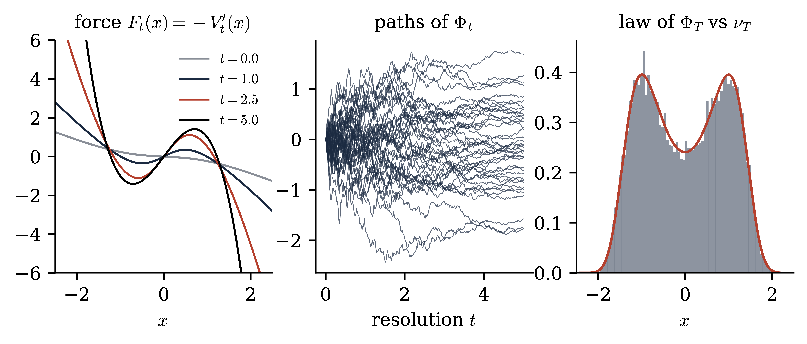
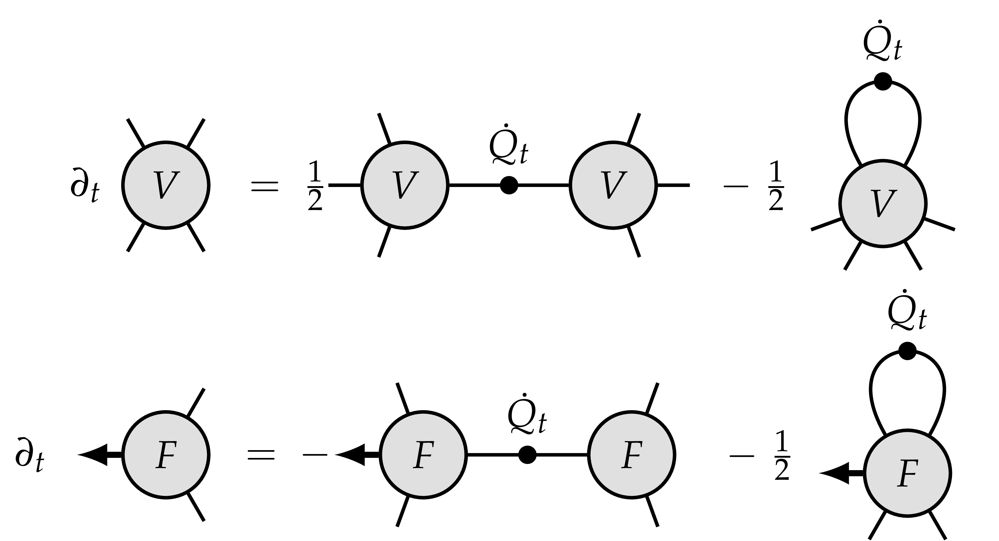
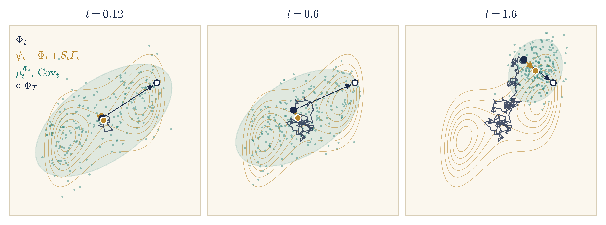
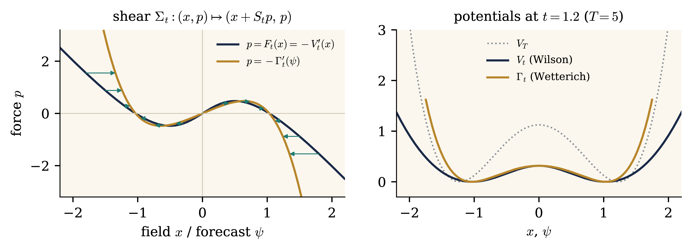
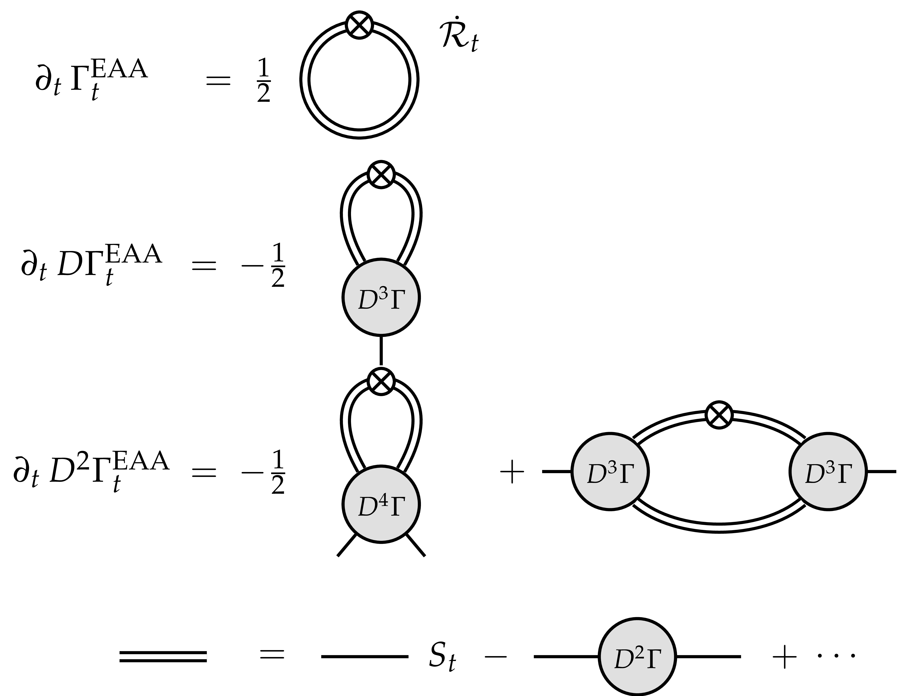
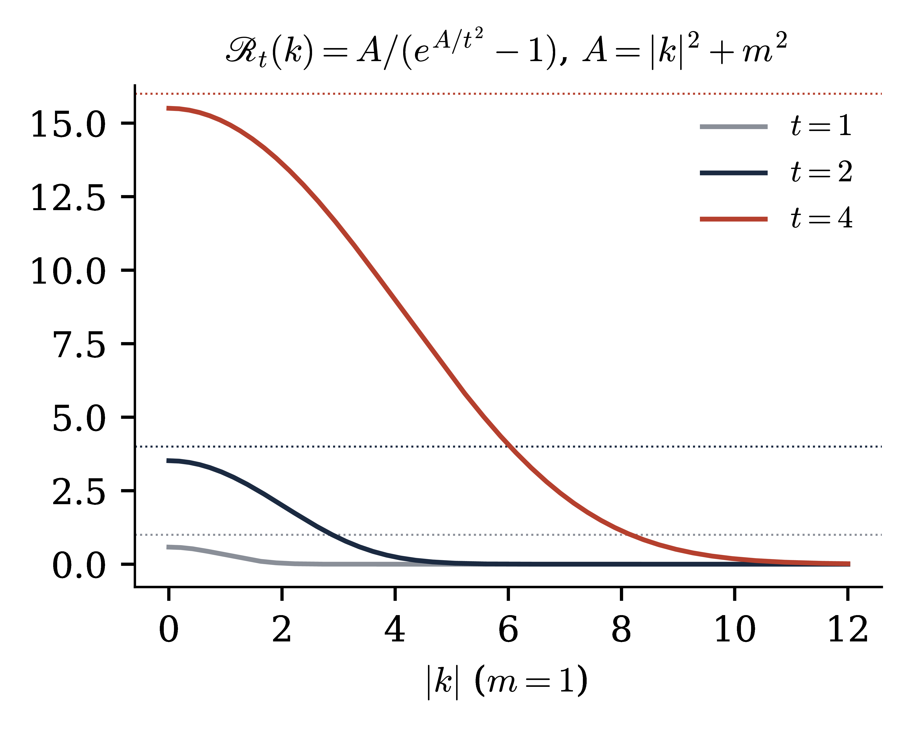
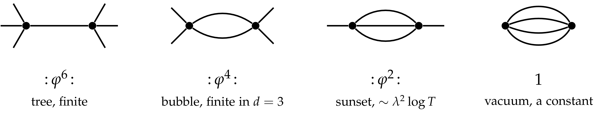

Constructive quantum field theory — Lecture 4 (notes)
A Constructive Introduction
to Quantum Field Theory
Lecture 4:
Forward–backward equations
M. Gubinelli
Mathematical Institute, University of Oxford
SISSA, November 2026
Abstract
Building on the scale decomposition and the stochastic
observables of Lecture 3, we introduce interactions. The interacting
measure can be generated in three ways: as a renormalisation group
decomposition of the covariance, as an optimal control problem, whose
dynamic programming equation is the Polchinski equation, and as a
filtering problem: the field at resolution \(t\) is a noisy
observation of the terminal field, the Polchinski process is this
observation written in its own filtration, and backward in resolution
its dynamics is linear, with Gaussian transitions, started from the
interacting measure. The three views meet in one
forward–backward system for a field and a force, and its natural
coordinates are the force coordinates: the forward equation loses its
drift, and the conditional covariance becomes the propagator. All this
can be said in terms of forces, propagators and covariances. In the
gradient case there is a parallel story for potentials: the value
function generates the canonical transformation to force coordinates,
the Legendre transform of the log-partition function of the filter
gives the effective average action, and its flow is the Wetterich
equation. We then discuss stochastic observables, the field equation
at every resolution, whose noise is a filtered Gaussian noise and
therefore sub-Gaussian, whatever the interaction (an observation
which, as far as we know, is new, and which is the key input of the a
priori estimates of Lecture 6), and the passage to infinite volume.
The appendices contain the algebra of the flow, perturbation theory
and counterterms, and the functional inequalities that follow from the
localisation. The treatment is formal: we compute as if all objects
were smooth and integrable, and we indicate where the real
difficulties lie.
The results presented in Lectures 4–6 were obtained
recently, with the use of AI, in collaboration with Sarah-Jean
Meyer.
In Lecture 3 we decomposed the Gaussian free field along a resolution
parameter and took as primary objects the stochastic observables:
martingales in the filtration of finite-resolution measurements [BCG26]. In this lecture we introduce interactions, and we tell
one story from three points of view: renormalisation, optimal control
and filtering. See also [Pol84, BK87, Sal99,
BBD24] for the renormalisation group side and [BG20,
BG23] for the variational side.
Structure.
Section 7 generates the interacting measure in the three
ways, and shows that they produce the same field and the same force.
Section 8 finds the natural coordinates, first in terms
of forces, propagators and covariances, then in terms of potentials,
where the value function generates the canonical transformation and
the Legendre transform leads to the Wetterich equation. Section 9 treats observables and the field equation with its
sub-Gaussian noise; that this noise is sub-Gaussian whatever the
interaction is, as far as we know, a new observation of these notes,
and it will be crucial for the a priori estimates of the FBSDE in
Lecture 6. Appendices A and B are additional
material, referred to from the main text where needed.
What is formal.
Rigorous statements require a finite-dimensional setting: a finite
lattice, or a Fourier cutoff on the torus, together with a finite
terminal resolution \(T\). There, all the identities below are
theorems under mild growth assumptions on the interaction, and their
proofs are the computations we give. The hard problems are the limits
\(T \to \infty\) (ultraviolet) and infinite volume (infrared),
together with the locality of the limiting objects. We mark with
(formal) the statements that we only derive at
this level.
Conventions.
As in Lectures 1–3: \(\mathcal{M}=\mathbb{T}^d_L\) or
\(\mathbb{R}^d\), \(A = m^2 - \Delta\), \(C = A^{- 1}\) with kernel
\(G\), \(\mu_m\) the GFF, \(\langle f, g \rangle = \int fg\) for real
functions. For a functional \(F\) on smooth fields, \(\mathrm{D} F
(\varphi) \in \mathcal{S}' (\mathcal{M})\) and \(\mathrm{D}^2 F
(\varphi)\) are its first and second derivatives, \(\mathrm{D}_h F =
\langle \mathrm{D} F, h \rangle\). \(H_n (a ; c)\) are the Hermite
polynomials of variance \(c\), and \(\mu^Q\) is the centred Gaussian
measure with covariance \(Q\).
Acknowledgements.
The results presented in Lectures 4–6 are joint work with
Sarah-Jean Meyer, obtained recently with the use of AI. M. Gubinelli
is partly supported by UK Research and Innovation via the grant
“StochFields” EP/Z534328/1 and by the Simons Collaboration
on Probabilistic Paths to QFT. S.-J. Meyer is supported by the grant
“StochFields” EP/Z534328/1.
Main lecture
7Three ways to generate the
interacting measure
Fix a finite volume \(\mathcal{M}=\mathbb{T}^d_L\) and a terminal
resolution \(T < \infty\), which plays the role of an ultraviolet
cutoff: the reference field \(X_T \sim \mu^{Q_T}\) is smooth. Let
\(V_T\) be an interaction, a functional of smooth fields bounded below.
Our main example is
How does the Gaussian scale decomposition of Lecture 3 generate
\(\nu_T\)? There are three answers.
Renormalisation (Section 7.1). Split
the covariance into shells and integrate them out one at a time. At
every resolution the field is again a Gibbs measure, and it is
driven by an effective force.
Optimal control (Section 7.2). Steer
the Gaussian field by a drift, at the least cost. The effective
potential is the value function, and the Polchinski equation is the
dynamic programming equation.
Filtering (Section 7.3). Observe the
terminal field through noise, with increasing precision. The field
at resolution \(t\) is the observation, the force is what it reveals
about the terminal field, and backward in resolution the process has
a linear dynamics with Gaussian transitions, started from the
interacting measure.
Section 7.4 shows that the three constructions produce the
same process. Throughout,
\(V_t\) is the interaction felt by the field at resolution \(t\) once
the fluctuations between \(t\) and \(T\) have been integrated out: it is
the Wilson effective action. At \(t = 0\), \(V_0 (0) = - \log Z_T\) is
the free energy. Here is the first key fact.
Proposition 7.2.
(Marginals)
Let \(\mathbb{P}\) be defined by
Proof. Under \(\mathbb{P}_0\), \(X_T = X_t +
(X_T - X_t)\) with an independent increment of law \(\mu^{Q_{T, t}}\).
Hence \(\mathbb{E}_{\mathbb{P}} [G (X_t)] = Z_T^{- 1} \mathbb{E}_0 [G
(X_t)
\mathrm{e}^{- V_T (X_T)}] = Z_T^{- 1} \mathbb{E}_0 [G (X_t)
\mathrm{e}^{- V_t
(X_t)}]\). The conditional law follows in the same
way.\(\Box\)
So at every resolution the field is again a Gibbs measure, with
reference covariance \(Q_t\) and potential \(V_t\). The measure-valued
martingale \((\mu_t^{X_t})_t\) goes from \(\nu_T\) at \(t = 0\) to
\(\delta_{X_T}\) at \(t = T\): it is a stochastic localisation
of \(\nu_T\) in the sense of Eldan [Eld23], adapted to the
covariance profile [BBD24, BCG26].
The field as a process.
The density of the interacting law with respect to the Gaussian one
is a martingale in resolution, so by Girsanov the field acquires a
drift, and this drift is the effective force. The resulting process is
the Polchinski process.
Theorem 7.3. (FBSDE for the interacting field) (formal) Under \(\mathbb{P}\) the
process \(\Phi_t := X_t\), the interacting field at resolution
\(t\), solves
with \(\Phi_0 = 0\) and a \(\mathbb{P}\)-cylindrical Brownian
motion \(W^{\mathbb{P}}\). In particular the effective
force \((F_t)_{t \leqslant T}\) is a \(\mathbb{P}\)-martingale:
an observable field of the interacting theory.
Proof. The density process is \(M_t :=
\mathbb{E}_0 [\hspace{0.17em} \mathrm{d} \mathbb{P}/
\hspace{0.17em}
\mathrm{d} \mathbb{P}_0 |\mathcal{F}_t] = Z_T^{- 1}
\mathrm{e}^{- V_t (X_t)}\), by Proposition 7.2. It is a
martingale, so the drift in Itô's formula vanishes and
\(\hspace{0.17em} \mathrm{d} M_t = - M_t \langle \mathrm{D} V_t
(X_t),
\dot{Q}_t^{1 / 2} \hspace{0.17em} \mathrm{d} W_t \rangle\). By
Girsanov's theorem, \(W^{\mathbb{P}}_t = W_t + \int_0^t \dot{Q}_s^{1 /
2} \mathrm{D} V_s (X_s)
\hspace{0.17em} \mathrm{d} s\) is a
\(\mathbb{P}\)-Brownian motion, which is (7.6).
Differentiating (7.3) gives \(\mathrm{D} V_t (\phi) =
\mu_t^{\phi} (\mathrm{D} V_T)\), which is the second identity.\(\Box\)
Read as an equation for an unknown pair \((\Phi, F)\), (7.6) is a forward–backward system [MY99]. The field is driven forward in resolution by a force
that is determined backward, as the conditional expectation of a
functional of the terminal field:
Here and below we drop the superscript and write \(W\) for the Brownian
motion driving the interacting field. No equation for the potential is
needed to state (7.7), and \(\nu_T =
\text{Law} (\Phi_T)\) is recovered from the solution. This is the
starting point of FBSDE constructions of Euclidean fields (Figure 7.1): one solves (7.7) with
renormalised \(V_T\), with estimates uniform in \(T\) and in the volume,
and takes the limit. The field coordinate \(\Phi\) is not an
observable, only a semimartingale. Its martingale part is the Gaussian
noise, and the observables are built from it and from \(F\).
Figure 7.1. The forward–backward
structure of (7.7) on
\(\mathbb{T}^2\), heat profile, at resolutions \(t_1 < t_2 < t_3
< T\), all built from the same noise. Top: the field gains the
fluctuation of each shell, \(\dot{Q}_t^{1 / 2} \mathrm{d} W_t\),
and reveals finer modes. Bottom: the effective force \(F_t
=\mathbb{E}_t [- \mathrm{D} V_T (\Phi_T)]\) for the \(\Phi^4\)
interaction, determined backward from the terminal interaction.
It is shown to first order in \(\lambda\), where it is the Wick
cube \(- 4 \lambda H_3 (\Phi_t ; c_t)\), and each panel is in
its own units.
7.2Optimal control: the Polchinski
equation
The measure \(\nu_T\) also solves a minimisation problem. Perturb the
Gaussian field by an adapted drift, and pay for the drift and for the
interaction at the endpoint. The effective potential is the value
function of this problem. Its equation in \(t\), which we first derive
directly from (7.3), is the dynamic programming equation.
Proof. \(u_t := \mathrm{e}^{- V_t} =
\mathrm{e}^{\frac{1}{2} \Delta_{Q_{T, t}}} u_T\) is a Gaussian
convolution, where \(\Delta_Q := \text{Tr} (Q \mathrm{D}^2)\). Since
\(\partial_t Q_{T, t} = - \dot{Q}_t\), it solves the backward heat
equation \(\partial_t u_t = - \frac{1}{2} \text{Tr} (\dot{Q}_t
\mathrm{D}^2 u_t)\). Insert \(\mathrm{D}^2 u = (\mathrm{D} V \otimes
\mathrm{D} V - \mathrm{D}^2 V) u\) and divide by \(- u\).\(\Box\)
The nonlinear term generates new, generally nonlocal, interactions
(trees), and the trace term contracts pairs of fields with the
covariance of the shell \([t, t + \mathrm{d} t]\) (loops). The
substitution \(u = \mathrm{e}^{- V}\), which linearises the equation, is
a Cole–Hopf transform: we come back to this in Section 8.1,
and in Appendix A.
The control problem.
Let \(\mathbb{H}_a\) be the set of progressively measurable drifts
\(u : [0, T] \to L^2 (\mathcal{M})\) with \(\mathbb{E} \int_0^T \|u_s
\|^2 \mathrm{d} s < \infty\), and set
\(\displaystyle I_t (u) := \int_0^t \dot{Q}_s^{1 / 2} u_s
\hspace{0.17em} \mathrm{d} s, \qquad
X^u := X + I (u),\)
the field driven by the control \(u\) under the Gaussian reference
\(\mathbb{P}_0\).
The following result is standard in the stochastic optimal control
setting, see e.g. Fleming and Soner's book [FS06]. A useful
non-Markovian generalisation is given by Boué–Dupuis [BD98].
The infimum is attained at the feedback control \(u^{\ast}_s = -
\dot{Q}_s^{1 / 2} \mathrm{D} V_s (X^{u^{\ast}}_s)\), and \(\text{Law}
(X^{u^{\ast}}_T) = \nu_T\). The effective potential is the value
function, and (7.8) is the
Hamilton–Jacobi–Bellman equation of this control
problem.
Proof. (Verification.) For any \(u\), by
Itô's formula and (7.8),
So the cost is \(\geqslant V_0 (0)\), with equality iff \(u =
u^{\ast}\). With this control \(X^{u^{\ast}}\) solves the same SDE as
\(\Phi\) in (7.6).\(\Box\)
Euler–Lagrange equation \(=\) FBSDE.
Perturbing \(u \to u + \varepsilon v\) in (7.9),
the first-order condition is \(\mathbb{E} \int_0^T \langle u_s +
\dot{Q}_s^{1 / 2} \mathbb{E}_s [\mathrm{D}
V_T (X^u_T)], v_s \rangle
\mathrm{d} s = 0\) for all adapted \(v\), i.e.
This is (7.7). The FBSDE is the
Euler–Lagrange equation of the variational problem, and the
Polchinski equation is its Hamilton–Jacobi equation.
Entropy.
By Girsanov, \(\frac{1}{2} \mathbb{E}_0 \int \|u\|^2 \geqslant
\text{Ent} (\text{Law} (X^u)
\hspace{0.17em} | \hspace{0.17em}
\text{Law} (X))\), which is at least the entropy of the terminal
marginal. So (7.9) is a pathwise
lift of the Gibbs variational principle \(- \log Z_T = \inf_{\nu} \{
\int V_T \hspace{0.17em} \mathrm{d} \nu +
\text{Ent} (\nu |
\mu^{Q_T})\}\). The lift is useful because adapted drifts can be
constructed scale by scale: one looks for \(u\) as a
functional of the Gaussian process \(X\), not as an unknown measure.
Bounds on \(\mathcal{W}_T (f)\) uniform in \(T\), for \(f\) in a rich
class, give tightness, moment bounds and the identification of limits.
For \(\Phi^4_3\) the naive problem does not have uniform bounds: the
leading-order optimal drift \(u_s \approx - 4 \lambda \dot{Q}_s^{1 / 2}
: X_s^3\): has a divergent cost. One renormalises by the change of
variables \(u = - 4 \lambda \dot{Q}^{1 / 2} : X^3 : + r\). After it, and
after further paracontrolled changes of variables, the singular terms
are explicit polynomials in the Wick powers of \(X\), cancelled by
the counterterms, and the residual functional is coercive. Its
control in Besov and paracontrolled norms, uniformly in \(T\), is the
construction of \(\Phi^4_3\) in [BG20]; see also [BG21].
Pontryagin's maximum principle.
Consider first a deterministic problem: minimise the cost \(J (u) = g
(x_T) + \int_t^T \ell (x_s, u_s) \mathrm{d} s\) over controls \(u\) on
\([t, T]\), where the state solves \(\dot{x}_s = b (x_s, u_s)\), \(x_t
= x\). With the Hamiltonian
\(\displaystyle H (x, p, u) := \langle p, b (x, u) \rangle - \ell (x,
u),\)
Pontryagin's principle [PBGM62] says that along an optimal
pair \((x, u)\) there is a costate \(p\) such that
The state runs forward from its initial value, the costate backward from
its terminal value: a two-point boundary value problem. In the smooth
case the principle is the first-order condition. If \(\xi =
\partial_{\varepsilon} x\) is the variation of the state under \(u \to u
+ \varepsilon v\), then \(\dot{\xi} = \partial_x b \xi + \partial_u
bv\), \(\xi_t = 0\), and the costate equation is exactly what makes
\(\frac{\mathrm{d}}{\mathrm{d} s} \langle p, \xi \rangle = \langle
\partial_x
\ell, \xi \rangle + \langle p, \partial_u bv \rangle\).
Integrating over \([t, T]\) and using the terminal condition,
So the costate is the Lagrange multiplier of the constraint \(\dot{x} =
b\), and an optimal control is a critical point of the Hamiltonian.
The costate is a gradient.
Let \(V (t, x) = \min_u J (u)\) be the value function. Comparing the
cost from \((t, x)\) with the cost from \((t + \mathrm{d} t, x + b
\mathrm{d} t)\) gives the Hamilton–Jacobi–Bellman equation
\(\displaystyle \partial_t V = H_{\ast} (x, - \mathrm{D} V), \qquad
H_{\ast} (x, p) := \max_u
H (x, p, u), \qquad V (T, \cdot) = g.\)
Its characteristics are Hamilton's equations for \(H_{\ast}\), and along
them \(p_s = - \mathrm{D} V (s, x_s)\): the costate is the sensitivity
of the optimal cost to a displacement of the state, i.e. the force that
the future exerts on the present.
The Hamiltonian of the field.
In the problem of Theorem 7.5 the state is the field,
\(b (x, u) = \dot{Q}_s^{1 / 2} u\), \(\ell = \frac{1}{2} \|u\|^2\) and
\(g = V_T\). Then \(H (p, u) = \langle p, \dot{Q}_s^{1 / 2} u \rangle
- \frac{1}{2} \|u\|^2\) is maximal at \(u = \dot{Q}_s^{1 / 2} p\), and
\(\displaystyle H_{\ast} (p) = \frac{1}{2} \langle p, \dot{Q}_s p
\rangle\)
is the Hamiltonian of a free particle with mass matrix \(\dot{Q}_s^{-
1}\): it does not depend on the state. Hence \(\dot{p} = 0\) and
\(\dot{x} = \dot{Q}_s p\): the costate is conserved, and from \(t\) to
\(T\) the state moves along the linear shear
Its trajectories are the characteristics of the transport part of (8.1). All the interaction sits in the
terminal condition \(p = - \mathrm{D} V_T (x + S_t p)\), an implicit
equation for the momentum, solved by a sum of tree graphs (Exercise 8.1). The corresponding Hamilton–Jacobi equation
\(\partial_t V = \frac{1}{2} \langle \mathrm{D} V, \dot{Q}_t \mathrm{D}
V
\rangle\) is the Polchinski equation (7.8)
without its trace term.
With noise.
For a controlled diffusion \(\mathrm{d} X = b (X, u) \mathrm{d} s +
\sigma \mathrm{d} W\), with \(\sigma\) independent of the control, the
stochastic maximum principle [Bis73, Pen90,
YZ99] keeps the Hamiltonian and the maximisation, but the
costate becomes an adapted process which solves a backward
stochastic differential equation,
\(\displaystyle \mathrm{d} p_s = - \partial_x H \hspace{0.17em}
\mathrm{d} s + \Upsilon_s
\hspace{0.17em} \mathrm{d} W_s, \qquad p_T = -
\mathrm{D} g (X_T) .\)
The martingale term \(\Upsilon \mathrm{d} W\) is the price of
adaptedness: the costate may not anticipate the noise. For the field
\(\partial_x H = 0\), so the costate is a martingale, \(p_t
=\mathbb{E}_t [- \mathrm{D} V_T (X_T)]\), and since the value function
is the effective potential (Theorem 7.5), \(p_t = -
\mathrm{D} V_t (X_t)\). The noise adds the Itô term to the
Hamilton–Jacobi equation, which becomes the Polchinski equation
(7.8).
In the notation of Theorem 7.5 the controlled field is
\(\mathrm{d} X = \dot{Q}_t^{1 / 2} (u \hspace{0.17em} \mathrm{d} t +
\mathrm{d}
W)\) and the optimal control is \(u_t = \dot{Q}_t^{1 / 2}
p_t\) (Exercise 7.3). Since \(p_t\) is the value \(F_t\) of
the force, the FBSDE (7.7) is the
stochastic Pontryagin system of this problem:
the field \(\Phi\) is the state, and the force \(F\) is the
costate.
7.3Filtering: measuring the
field
Stochastic localisation was introduced by Eldan [Eld13] to
study measures in high dimension (see [Eld23] for a
survey). The idea is to write a measure as a mixture of simpler ones,
through a measure-valued martingale driven by noise. Proposition 7.2 says that the Polchinski process does exactly this for
\(\nu_T\). What Eldan's construction adds to the picture of Section 7.1 is a statistical reading:
the Polchinski process is a noisy observation of its own terminal
value, and its drift is what an optimal filter learns from this
observation.
The terminal field as a hidden signal.
Assume that all the deterministic covariance operators are functions
of \(A\), hence commute, and let \(K = Q_T^{- 1}\), \(J_t = KQ_t\), so
that \(J_0 = 0\), \(J_T = 1\). For the heat profile, \(K = A
\mathrm{e}^{A / T^2}\) and \(J_t = \mathrm{e}^{- A (t^{- 2} - T^{-
2})}\) is a heat semigroup, which tends to \(\mathrm{e}^{- A / t^2}\)
as \(T \to \infty\). Given its terminal value, the interacting field
is still the Gaussian bridge, as the density of \(\mathbb{P}\) with
respect to \(\mathbb{P}_0\) depends on \(X_T\) only:
Read (7.14) as a statistical model.
The signal \(\Phi_T\) is hidden, with prior \(\nu_T\),
and the path \((\Phi_s)_{s \leqslant t}\) is an observation of
it: a copy attenuated by \(J_t\) and corrupted by a Gaussian noise
independent of the signal. Infinitesimally, the bridge is the Doob
transform of \(X\) by the Gaussian density of the remaining increment
\(\Phi_T - \Phi_t \sim \mu^{S_t}\), so that
with \(B\) a Brownian motion independent of \(\Phi_T\), in the
filtration enlarged by \(\sigma (\Phi_T)\): at each resolution the field
is pulled towards the hidden terminal field, and the pull is seen
through noise. The filtering problem is to estimate \(\Phi_T\)
from \(\mathcal{F}_t = \sigma (\Phi_s : s \leqslant t)\), the filtration
of the Polchinski process itself. Let \(\psi_t =\mathbb{E}_t [\Phi_T]\),
\(\text{Cov}_t = \text{Cov} (\Phi_T |\mathcal{F}_t)\), and let
Proof. (a) By Proposition 7.2 the
conditional law is \(\mu_t^{\Phi_t}\), the tilt of \(\mu^{S_t} (\cdot -
\Phi_t)\) by \(\mathrm{e}^{- V_T}\). The ratio of the Gaussian densities
of \(\mu^{S_t} (\cdot - x)\) and \(\mu^{Q_T}\) at \(y\) is
\(\mathrm{e}^{\langle S_t^{- 1} x, y \rangle - \frac{1}{2} \langle
y,
\mathcal{R}_t y \rangle}\) up to a function of \(x\); equivalently,
apply Bayes' formula to the likelihood of (7.14).
(b) Integrate (7.6) from \(t\) to
\(T\) and condition on \(\mathcal{F}_t\): since \(F\) is a martingale,
\(\mathbb{E}_t \int_t^T \dot{Q}_s F_s \hspace{0.17em} \mathrm{d} s = S_t
F_t\), so \(\psi_t = \Phi_t + S_t F_t\), and the posterior mean of the
drift of (7.15) is \(\dot{Q}_t S_t^{-
1} (\psi_t - \Phi_t) = \dot{Q}_t F_t\). Comparing the two expressions
(7.6) and (7.15)
of \(\mathrm{d} \Phi_t\) gives the formula for \(W\). (c) \(O_t = G_t
(\Phi_t)\) with \(G_t (x) = \mu_t^x (G)\) is a martingale, so the drift
in Itô's formula vanishes, and differentiating (7.16) in \(x\) gives \(\mathrm{D} G_t (x) = S_t^{- 1}
\text{Cov}_t (\Phi_T, G (\Phi_T))\).\(\Box\)
So the Polchinski process is a filter. The interacting measure is the
prior on a hidden field; at resolution \(t\) one has observed the coarse
field \(\Phi_t\), and \(\mu_t^{\Phi_t}\) is what is known about the fine
one. The forecast \(\psi_t\) is the posterior mean of the hidden field,
and \(\dot{Q}_t F_t\) is the posterior mean of its pull on the observed
one. For the Gaussian prior \(\mu^{Q_T}\) the increments are
independent, so the posterior mean is \(\Phi_t\) itself and \(F = 0\):
\(\Phi_t\) is the estimate that ignores the interaction and \(\psi_t\)
the one that includes it. The effective potential is a likelihood ratio:
by the proof of Theorem 7.3, \(Z_T^{- 1} \mathrm{e}^{- V_t
(\Phi_t)}\) is the likelihood ratio of the observation up to resolution
\(t\) under the interacting and under the Gaussian prior, and the
Polchinski equation is the equation of its logarithm.
Proposition 7.7.
(Backward in resolution)
(formal) Under
\(\mathbb{P}\) the reversed process \(\hat{\Phi}_s := \Phi_{T - s}\),
\(s \in [0, T]\), solves the linear equation
with \(\hat{W}\) a Brownian motion independent of \(\Phi_T\), and
its solution is (7.14). Backward in
resolution, the Polchinski process is a linear Markov process, with
Gaussian transition kernels which do not depend on the interaction,
started from the interacting measure. It is not a Gaussian process:
its marginals \(\nu_t\) are not Gaussian.
Proof. Under \(\mathbb{P}_0\), \(X\) is a
centred Gaussian process with independent increments, so its reversal is
a Gaussian Markov process: for \(t < u\), the law of \(X_t\) given
\((X_r)_{r \geqslant u}\) is \(N (Q_t Q_u^{- 1} X_u, Q_t - Q_t Q_u^{- 1}
Q_t)\), and letting \(u \downarrow t\) gives the drift and the diffusion
of (7.17). Since \(\mathrm{d}
\mathbb{P}/ \mathrm{d} \mathbb{P}_0\) is a function of \(X_T\), the
initial value of the reversed process, these transition kernels are the
same under \(\mathbb{P}\), and only the initial law changes, from
\(\mu^{Q_T}\) to \(\nu_T\).\(\Box\)
Generation by denoising.
So two dynamics have the same marginals \(\nu_t\). Backward in
resolution, the interacting field is progressively blurred by Gaussian
noise, \(\Phi_t = J_t \Phi_T + \zeta_t\), until nothing is left at \(t
= 0\); this dynamics does not know the interaction. Forward, the
Polchinski process undoes the blurring, and all the interaction sits
in its drift. For \(0 < t \leqslant T\), at finite cutoff, the
time-reversal formula for diffusions says that the forward drift is
minus the backward one plus \(\dot{Q}_t\) times the score of the
marginal: if \(p_t\) is the density of \(\nu_t\),
the force is the score of \(\nu_t\) relative to that of the Gaussian
reference \(\mu^{Q_t}\), as \(\nu_t \propto \mathrm{e}^{- V_t}
\mu^{Q_t}\) requires. The forecast is the optimal denoiser, and
Tweedie's formula
is again \(\psi_t = \Phi_t + S_t F_t\). This is the structure of
score-based generative models (diffusion models), with \(\nu_T\) as the
data distribution, the blurring as the noising process and the
Polchinski process as the generating dynamics.
Remark 7.8. (The
measurement coordinate and the literature)
In the literature on stochastic localisation [Eld13, Eld23, BBD24] the observation is written in
another coordinate. Let \(j_t := S_t^{- 1} \Phi_t\). Since \(S_t^{- 1}
J_t =\mathcal{R}_t\), (7.14) becomes
a linear measurement of the terminal field with signal-to-noise ratio
\(\mathcal{R}_t\):
up to a function of \(t\). Then \(\psi_t = \mathrm{D} \mathcal{K}_t
(j_t)\), \(\text{Cov}_t = \mathrm{D}^2 \mathcal{K}_t (j_t)\),
\(\hspace{0.17em} \mathrm{d} j_t = \dot{\mathcal{R}}_t \psi_t
\hspace{0.17em}
\mathrm{d} t + \dot{\mathcal{R}}_t^{1 / 2}
\hspace{0.17em} \mathrm{d} W_t\) with the same innovation \(W\), and
the Polchinski equation in the variable \(j\) [BBD24]
(\(\partial_t \mathcal{K}= - \frac{1}{2} \mathbb{E} \langle y,
\dot{\mathcal{R}}
y \rangle\) and \(\text{Tr} (\dot{\mathcal{R}}
\mathrm{D}^2 \mathcal{K}) =\mathbb{E} \langle y,
\dot{\mathcal{R}} y
\rangle - \langle \psi, \dot{\mathcal{R}} \psi \rangle\), expectations
under the posterior). The basic form of Eldan's scheme is the profile
\(S_t = (Q_T^{- 1} + t)^{- 1}\), \(t \in [0, \infty)\) (the terminal
resolution is then \(t = \infty\), and \(Q_T\) is the cutoff
covariance), where \(\mathcal{R}_t = t\) and \(j_t = t \Phi_T + N_t\)
with \(N\) a Brownian motion; Eldan's original construction [Eld13]
uses an adapted control matrix. This is the profile of Lectures
5–6.
Literature: Polchinski, Eldan and diffusion models.
The objects of this section have been studied in three communities.
Stochastic localisation was introduced by Eldan [Eld13]
for the KLS conjecture and is surveyed in [Eld23]; Chen
and Eldan [CE22] made it a general framework, the
localisation schemes, for mixing bounds of Markov chains. That Eldan's
process and the Polchinski flow of the renormalisation group are the
same object in different coordinates is explained in the survey of
Bauerschmidt, Bodineau and Dagallier [BBD24], who use the
Polchinski flow to prove log-Sobolev inequalities. On the generative
side, diffusion models were introduced in [SWMG15, HJA20] and given their SDE form, a noising diffusion
reversed in time by a drift built from the score, in [SSK21];
the time-reversal formula goes back to Anderson [And82]
and Haussmann and Pardoux [HP86], and Tweedie's formula
for the posterior mean is discussed in [Efr11]. The two
sides were connected by El Alaoui, Montanari and Sellke [EMS22],
who run stochastic localisation as a sampling algorithm, by El Alaoui
and Montanari [AM21], who read it as the observation of a
signal in Gaussian noise (the filtering point of view of Proposition
7.6), and by Montanari [Mon23], who presents
denoising diffusions as instances of stochastic localisation. On the
physics side, Cotler and Rezchikov showed that Polchinski's exact
renormalisation group is a gradient flow of the relative entropy in
the sense of optimal transport [CR23], and proposed to
read diffusion models as inverse renormalisation group flows [CR23b].
7.4Where the three views meet
The three constructions give one process. Renormalisation produces it as
the field at resolution \(t\) with its effective drift (Theorem 7.3),
control as the optimal state (7.11), and filtering as the
observation written in its own filtration (Proposition 7.6).
Each of them has a name for each object:
Renormalisation
Control
Filtering
\(t\)
resolved covariance \(Q_t\)
time of the problem
information gained \(\mathcal{R}_t\)
\(\Phi_t\)
field at resolution \(t\)
state
observation; posterior mean for the Gaussian prior
\(F_t\)
effective force
costate
posterior mean of the terminal force
\(W\)
fresh fluctuation of the shell
noise of the controlled field
innovation
\(S_t\)
unresolved covariance
free motion from \(t\) to \(T\)
posterior covariance for the Gaussian prior
\(\psi_t = \Phi_t + S_t F_t\)
mean of the conditional law \(\mu_t^{\Phi_t}\)
terminal state predicted by free motion
posterior mean
\(\text{Cov}_t\)
covariance of \(\mu_t^{\Phi_t}\)
\(S_t - S_t \mathrm{D}^2 V_t S_t\)
posterior covariance
\(V_t\)
effective potential
value function
minus the log-likelihood ratio of the observation, up to \(\log
Z_T\)
In the last column, \(\Phi_t\) is the estimate of the terminal field
that ignores the interaction, and \(\psi_t\) is the estimate that
includes it. Their difference is \(S_t F_t\): the force is what the
interaction adds to the estimate, in units of the free propagator
\(S_t\). The conditional covariance \(\text{Cov}_t\) replaces \(S_t\) as
the propagator. Forces, propagators and covariances are the common
language of the three views, and the next section writes the system in
it. Only the last row of the table, and the formula for \(\text{Cov}_t\)
in the control column, involve a potential.

Figure 7.2. A zero-dimensional Polchinski
process (Exercise 7.2): \(Q_t = 1 - \mathrm{e}^{-
t}\), \(T = 5\), \(V_T (x) = \frac{1}{2} x^4 - \frac{3}{2}
x^2\). Left: the effective force \(F_t = - V_t'\) is almost
linear at low resolution and develops the double-well structure
as \(t \to T\). Centre: paths of the FBSDE (7.6), which split between the two wells
(stochastic localisation). Right: histogram of \(\Phi_T\) (\(2
\cdot 10^4\) paths) against the density of \(\nu_T\).
Exercises
Exercise 7.1.
(Quadratic interactions)
Let \(V_T (\varphi) = \frac{\kappa}{2}
\langle \varphi, \varphi \rangle\), \(\kappa > 0\). (a) Show that
\(V_t (\varphi) = \frac{1}{2} \langle \varphi, \kappa (1 + \kappa
Q_{T, t})^{-
1} \varphi \rangle + \text{const}\) solves (7.8). (b) Show that \(\nu_T\) is Gaussian with
covariance \((Q_T^{- 1} + \kappa)^{- 1}\): for \(Q_T \to (m^2 -
\Delta)^{- 1}\) this is the GFF of mass \((m^2 + \kappa)^{1 / 2}\).
(c) Write (7.6) explicitly. It is a
linear FBSDE. Solve it, and check that \(F_t\) is a martingale.
Moral: the mass can be put either into the covariance or into
the force.
Exercise 7.2.
(Zero dimensions) Take \(\mathcal{M}\) a point, \(Q_t = q (t)\) scalar,
increasing, \(V_T (x) = \lambda x^4 - ax^2\) with \(\lambda > 0\), \(a
\geqslant 0\) (a double well if \(a > 0\); Figure 7.2 has
\(\lambda = \frac{1}{2}\), \(a = \frac{3}{2}\)). (a) Write (7.8) and solve it numerically for \(q (t)
= 1 - \mathrm{e}^{- t}\). (b) Simulate (7.6)
by first computing \(V_t'\) on a grid, and compare the histogram of
\(\Phi_T\) with \(\mathrm{e}^{- \lambda x^4 + ax^2 - x^2 / 2 q (T)}\).
(c) Compute \(V_t\) to second order in \(\lambda\).
Exercise 7.3.
(Stochastic maximum principle)
(a) For the control problem (7.9), perturb an optimal control \(u \to u +
\varepsilon v\) and show that \(p_t := \mathbb{E}_t [- \mathrm{D} V_T
(X^u_T)]\) satisfies \(u_t = \dot{Q}_t^{1 / 2} p_t\). Identify \(p\)
with the force \(F\) of (7.6). (b)
Show that \(\Upsilon_t = \mathrm{D} F_t (\Phi_t) \dot{Q}_t^{1 /
2}\).
Exercise 7.4.
(Optimal drift) (a)
Derive (7.11) from (7.9), and check that the optimal \(u\) is a
martingale up to the factor \(\dot{Q}^{1 / 2}\). (b) For the quadratic
interaction of Exercise 7.1, compute the optimal drift
and the value (7.9)
explicitly.
Exercise 7.5.
(Cost of the leading drift)
For \(V_T = \lambda \int : \varphi^4 :_T\) on
\(\mathbb{T}^3_L\), show that
which diverges linearly in \(T\). Relate this to the \(k
= 4\) term of (A.6).
8Force coordinates and
potentials
The three views agree on the forward–backward system (7.7),
which from now on is the primary object, with a martingale force \(F_t =
F_t (\Phi_t)\), \(\hspace{0.17em} \mathrm{d} F_t = \Upsilon_t
\hspace{0.17em} \mathrm{d} W_t\). We look for the coordinates in which
it is simplest. They are suggested by the table above: the posterior
mean \(\psi\), which we call the forecast, and the
force. They remove the predictable part of the forward dynamics, and
they integrate exactly the bilinear (tree) part of the force flow.
Sections 8.1–8.4 tell this story in
terms of forces, propagators and covariances. The potential enters only
through the terminal force and, for a gradient force, through the
identification of the response with the conditional covariance; the
system in force coordinates makes sense for a force that is not a
gradient. Sections 8.5–8.7 tell it again
in terms of potentials: the value function generates the canonical
transformation to force coordinates, the Legendre transform connects it
to the filter, and the equation for the force is the Wetterich equation
for the effective average action [Wet93, BTW02].
8.1The force and a Burgers
equation
Differentiating (7.8), the effective
force \(F_t = - \mathrm{D} V_t\), now as a function of the field, solves
an infinite-dimensional, backward, viscous Burgers equation.
The Cole–Hopf transform \(F = \mathrm{D} \log u\) linearises it,
which is the statement that \(u = \mathrm{e}^{- V}\) solves a heat
equation. Two remarks on (8.1):

Figure 8.1. The Polchinski equation
(7.8) and the Burgers
equation (8.1) as graphs. A
blob with \(n\) legs is the \(n\)-th derivative of \(V_t\), or
of the force \(F_t\), whose root is the arrow; a line with a dot
is the kernel \(\dot{Q}_t\). The first term joins two blobs and
makes a tree; the second closes a loop on one blob. Integrating
from \(V_T\) and iterating generates the connected Feynman
graphs, with lines \(Q_{T, t}\).
it uses only the force, which is a local quantity
(intensive), while \(V_t\) is extensive, of
order of the volume. This matters in infinite volume (Section 9.4);
the Burgers flows for different covariances commute, and the
curvature vanishes, when \(\mathrm{D} F_t\) is symmetric, i.e.
when \(F_t\) is a gradient [BCG26]. For a
non-gradient force, as for the general Wilson–Itô
diffusions of [BCG26], the flows do not commute.
The function \(F_t (\cdot)\) with \(F_t = F_t (\Phi_t)\) is the
decoupling field of the FBSDE, and the Burgers equation (8.1) is its quasilinear PDE; \(\Upsilon_t =
\mathrm{D} F_t (\Phi_t) \dot{Q}_t^{1 / 2}\) is the martingale
representation integrand of the costate. The two terms of (8.1) have distinct origins. The transport term \(-
\mathrm{D} F [\dot{Q} F]\) comes from the drift of the state, and
generates the tree diagrams. The diffusion term \(- \frac{1}{2}
\text{Tr} (\dot{Q} \mathrm{D}^2 F)\) is the Itô correction, and
generates the loops.
8.2Removing the predictable drift
The drift \(\dot{Q}_t F_t\) of the state is predictable, and the costate
is a martingale. Hence the drift that remains to be accumulated on \([t,
T]\) is predicted, at resolution \(t\), by transporting the current
state with the current costate along the free flow (7.13).
Proposition 8.1.
(The forecast) (formal) The conditional mean of the
terminal field is
Proof. The identity is in the proof of
Proposition 7.6(b), and uses no commutativity. For the
differential, the drift \(\dot{Q}_t F_t\) of \(\Phi\) cancels against
\(\dot{S}_t F_t\), and \(S_t \hspace{0.17em} \mathrm{d} F_t = S_t
\Upsilon_t \hspace{0.17em} \mathrm{d}
W_t\).\(\Box\)
So \(\psi\) is a closed observable, the field observable of [BCG26]. The field splits as
\(\displaystyle \Phi_t = \psi_t - S_t F_t
:\)
(8.4)
a martingale, minus the drift still expected on the unresolved scales,
which vanishes at \(t = T\). The noise of \(\psi\) in (8.3) has two sources: the fresh fluctuation of the
shell, \(\dot{Q}_t^{1 / 2} \mathrm{d} W_t\), and the revision of the
forecast of the remaining drift, \(S_t \hspace{0.17em} \mathrm{d} F_t\).
The coupling between the forward and the backward equations, which was
in the drift of \(\Phi\), now sits in the volatility of \(\psi\). The
coordinate \(\psi\) is the interaction picture with respect to
the noiseless (classical) part of the dynamics.
8.3The FBSDE in the forecast coordinate
Assume that the map
\(\displaystyle x \mapsto \psi = x + S_t F_t (x)\)
so that \(F_t = -\mathcal{F}_t (\psi_t)\): the costate is now a function
of the forecast. Introduce the response, and recall the
regulator of the filter:
The backward equation is \(F_t =\mathbb{E}_t [F_T]\) with \(\psi_T =
\Phi_T\). Since \(\mathcal{F}_t (\psi_t)\) is a martingale and \(\psi\)
has no drift, the drift in Itô's formula for \(\mathcal{F}_t
(\psi_t)\) is the left-hand side of (8.8).\(\Box\)
Compare (8.8) with the Burgers
equation (8.1): the transport term
has been absorbed exactly by the change of coordinates, and only the
Itô term is left. If it is dropped, \(\mathcal{F}_t = \mathrm{D}
V_T\) does not move: all the tree diagrams are contained in the
coordinate change (8.5). The loops
are generated only by the quadratic variation \(\mathcal{C}_t\) of the
forecast, i.e. by the randomness of the noise and of the force
revisions, and the nonlinearity has moved into the field dependence of
\(\mathcal{C}_t\). None of this uses a gradient structure or a Gaussian
convolution: Theorem 8.2 holds for any FBSDE of the form
(7.7) with a Markov martingale force,
gradient or not, for which the coordinate change is invertible. For a
general terminal force \(F_T =\mathfrak{f} (\Phi_T)\), replace
\(\mathrm{D} V_T\) by \(-\mathfrak{f}\) in (8.7)
and (8.8).
A one-dimensional model: Burgers and Lax–Oleinik.
The passage to force coordinates is the passage from Eulerian to
Lagrangian coordinates for Burgers' equation. Consider first the
inviscid Burgers equation on \(\mathbb{R}\),
\(\displaystyle \partial_s u + u \partial_x u = 0, \qquad u (0, x) = g'
(x) .\)
Along the characteristics \(x = y + sg' (y)\) the velocity is constant,
\(u (s, y + sg' (y)) = g' (y)\): in the Lagrangian label \(y\) the
transport term disappears, and nothing moves. As long as the
characteristics do not cross, i.e. \(1 + sg'' > 0\), the map \(y \mapsto
x\) is invertible, and \(u = \partial_x G\) with the potential given by
the Lax–Oleinik formula (or Hopf–Lax formula)
\(\displaystyle G (s, x) = \min_y \left\{ g (y) + \frac{(x - y)^2}{2 s}
\right\}, \qquad u (s,
x) = \frac{x - y (s, x)}{s} = g' (y (s, x)),\)
whose minimiser \(y (s, x)\) is the Lagrangian label of the point \(x\).
After the characteristics cross, the formula still selects one label,
the entropy solution, and \(u\) has shocks. The viscous equation
\(\partial_s u + u \partial_x u = \varepsilon \partial_x^2 u\) is
linearised by the Cole–Hopf transform,
and \(G^{\varepsilon} \to G\) as \(\varepsilon \to 0\) by Laplace's
method.
The dictionary with this section is: the unresolved covariance \(S_t\)
is the time \(s\), the field \(x\) is the Eulerian point, the forecast
\(\psi\) is the Lagrangian label \(y\), \(- F_t = \mathrm{D} V_t\) is
the velocity \(u\) (and \(V_t\) is \(G\)), and \(V_T\) is the datum
\(g\). The shear (7.13), i.e. (8.5) at tree level, \(x = \psi + S_t
\mathrm{D} V_T (\psi)\), is the characteristic map; the noiseless
Polchinski equation is the Hamilton–Jacobi equation \(\partial_s G
+ \frac{1}{2} (\partial_x G)^2 = 0\), whose gradient solves the inviscid
Burgers equation; the tree-level potential (8.17)
is the Lax–Oleinik formula; and the condition for the
characteristics not to cross, \(S_t^{- 1} + \mathrm{D}^2 V_T > 0\), is
\(1 + sg'' > 0\). The Polchinski equation is the viscous
Hamilton–Jacobi equation, with \(\varepsilon = \frac{1}{2}\) in
the metric \(\dot{Q}_t\), and (7.3)
is the Cole–Hopf formula.
Theorem 8.2 is the Lagrangian description of the
viscous problem. With noise the label is no longer a function
of the Eulerian point: it is its posterior mean, the mean \(\psi\) of
\(y\) under the Cole–Hopf measure \(\propto \mathrm{e}^{- g (y) -
(x - y)^2 / 2 s}\), which is \(\mu_t^x\). In this label the velocity is
no longer constant but a martingale, and its evolution (8.8) contains only the loops. The Lax–Oleinik
form survives exactly: the Moreau formula (8.12)
of Section 8.5 is the Lax–Oleinik formula with the
datum \(V_T\) replaced by \(\Gamma_t\), and at finite cutoff no shocks
form: the noise keeps the label map invertible, locally by Proposition
8.3 and globally by the convexity argument of Section 8.5. Figure 8.3 shows the construction for a
double well.
8.4Conditional moments
For the Polchinski process the response has a direct meaning.
Proposition 8.3. (formal) If \(F_t = - \mathrm{D} V_t\)
then
In particular \(H_t > 0\) is symmetric, \(\mathbb{1} + S_t
\mathrm{D} F_t = \text{Cov}_t S_t^{- 1}\) is always invertible, and
\(H_t \leqslant S_t\) when \(V_T\) is convex.
Proof. By (7.5),
the law of \(\Phi_T\) given \(\mathcal{F}_t\) depends only on
\(\Phi_t\), so it is also the law given \(\Phi_t\). The conditional law
\(\mu_t^{\phi}\) is the tilt of \(\mu^{S_t} (\cdot - \phi)\) by
\(\mathrm{e}^{- V_T}\); differentiating twice in \(\phi\) gives
\(\text{Cov} (\mu_t^{\phi}) = S_t - S_t \mathrm{D}^2 V_t (\phi) S_t\).
On the other hand \(H_t S_t^{- 1} = \mathbb{1} + S_t \mathrm{D} F_t =
\mathbb{1} - S_t
\mathrm{D}^2 V_t\). The last claim is the
Brascamp–Lieb inequality.\(\Box\)
So the forecast and the response are the first two conditional moments
of the stochastic localisation \(\mu_t^{\Phi_t}\) of Proposition 7.2: \((\psi_t, \text{Cov}_t) = (\mathbb{E}[\Phi_T
\hspace{0.17em} | \hspace{0.17em}
\Phi_t], \text{Cov} (\Phi_T
\hspace{0.17em} | \hspace{0.17em} \Phi_t))\) (Figure 8.2).
They are tied by Itô's formula: since \(\mathbb{E}_t [\Phi_T
\otimes \Phi_T] = \psi_t \otimes \psi_t + \text{Cov}_t\) is a
martingale,
Conditional variance is resolved at the rate \(\text{Cov}_t
\dot{\mathcal{R}}_t \text{Cov}_t\), which for the Gaussian reference is
\(S_t \dot{\mathcal{R}}_t S_t = \dot{Q}_t\).
Brascamp–Lieb and Cramér–Rao bounds.
The conditional law \(\mu^{\phi}_t\) has density proportional to
\(\mathrm{e}^{-\mathcal{U}}\), with \(\mathcal{U} (y) = V_T (y) +
\frac{1}{2} \langle y - \phi, S_t^{- 1} (y - \phi)
\rangle\) and
\(\mathrm{D}^2 \mathcal{U}= S_t^{- 1} + \mathrm{D}^2 V_T\). Two
classical inequalities bound its covariance by the Hessian of
\(\mathcal{U}\). If \(\mathrm{D}^2 \mathcal{U}> 0\), the
Brascamp–Lieb inequality [BL76],
\(\operatorname{Var}_{\mu} (f) \leqslant \mathbb{E}_{\mu} \langle
\mathrm{D} f,
(\mathrm{D}^2 \mathcal{U})^{- 1} \mathrm{D} f \rangle\),
applied to linear functions \(f = \langle h, \cdot \rangle\), and the
Cramér–Rao inequality, which needs no convexity, give
respectively the upper and the lower bound in
The lower bound follows from \(\mathbb{E}_{\mu} [(y - m) \otimes
\mathrm{D} \mathcal{U}(y)] = 1\) (integration by parts) and the
Cauchy–Schwarz inequality, with the Fisher information
\(\mathbb{E}_{\mu} [\mathrm{D} \mathcal{U} \otimes \mathrm{D}
\mathcal{U}]
=\mathbb{E}_{\mu} \mathrm{D}^2 \mathcal{U}\) (Exercise 8.9). The two bounds coincide when \(V_T\) is quadratic, and
their gap is a Jensen gap for the inverse. Through Proposition 8.3
they are two-sided bounds on the Hessian of the effective potential,
i.e. on the response \(H_t\), which is the propagator of the Wetterich
equation below. Some consequences:
If \(V_T\) is convex, then \(\operatorname{Cov}_t \leqslant S_t\):
the interaction can only reduce the conditional variance.
Equivalently \(\mathrm{D}^2 V_t \geqslant 0\): convexity is
preserved along the Polchinski flow (as also follows from the
Prékopa–Leindler inequality).
If \(\mathrm{D}^2 V_T \geqslant \kappa\) with \(\kappa > 0\), then
\(\operatorname{Cov}_t \leqslant (S_t^{- 1} + \kappa)^{- 1}\)
uniformly in the conditioning: a uniform mass in the interaction is
a uniform mass in every conditional law.
For \(\Phi^4_3\) convexity is already lost through the Wick
ordering: \(H_4 (\varphi ; c_T) = \varphi^4 - 6 c_T \varphi^2 + 3
c_T^2\), so (7.1) has curvature
\(- 12 \lambda c_T + 2 \gamma_T\) at \(\varphi = 0\), which diverges
as \(T \to \infty\) (this happens already for \(\Phi^4_2\)). The
upper bound is lost, and at low resolution the conditional law may
spread over several wells (Figure 8.2). This is the
large-field problem. In Lecture 5 it is handled by a clipped
approximate force, whose global coercivity (Lemma 12.1 there) is a
bound of Brascamp–Lieb type on the response.

Figure 8.2. Stochastic localisation for a
two-component field: \(Q_t = (1 - \mathrm{e}^{- t})
\mathbb{1}\), \(T = 4\), \(V_T\) a tilted double well, and the
contours show the density of \(\nu_T\). One path of (7.6) up to resolution \(t\) (navy),
with its terminal value \(\Phi_T\) (open circle). The forecast
\(\psi_t = \Phi_t + S_t F_t\) (gold) is the mean of the
conditional law \(\mu_t^{\Phi_t}\): teal samples, and the
ellipse is two standard deviations of \(\text{Cov}_t\). At low
resolution the conditional law covers both wells; as \(t\) grows
it localises on one of them.
8.5Potentials: the value function
as a generator
We now use that the force is a gradient, \(F_t = - \mathrm{D} V_t\),
whose graph is a Lagrangian submanifold, and that \(V_t\) is the value
function of Theorem 7.5. In Hamilton–Jacobi theory a
value function is more than a cost: it generates a canonical
transformation. A complete family of solutions of the
Hamilton–Jacobi equation generates the transformation that
trivialises the dynamics. Force coordinates are this transformation.
Phase space and Lagrangian graphs.
Pairs \((x, p)\) of a field and a value of the force form the phase
space \(\mathbb{R}^n \times \mathbb{R}^n\), with the symplectic form
\(\omega = \sum_i \mathrm{d} x_i \wedge \mathrm{d} p_i\). A
submanifold \(L\) of dimension \(n\) is Lagrangian if
\(\omega\) vanishes on it. The graph \(L = \{(x, F (x))\}\) of a force
field is Lagrangian if and only if \(\sum_{i, j} \partial_j F_i
\mathrm{d} x_i \wedge \mathrm{d} x_j = 0\), i.e. \(\mathrm{D} F\) is
symmetric, i.e. \(F\) is (locally) a gradient: the gradient sector is
the sector of Lagrangian graphs. A map that preserves \(\omega\) (a
symplectic map) sends Lagrangian submanifolds to Lagrangian
submanifolds. The shear (7.13) is
symplectic, since \(\Sigma_t^{\ast} \omega = \omega + \sum_{i, j}
(S_t)_{ij} \mathrm{d} p_j \wedge
\mathrm{d} p_i = \omega\) for \(S_t\)
symmetric. So it maps the graph of a gradient to a Lagrangian
submanifold; if the image is again a graph over the new base variable,
it is the graph of a gradient.
The free action generates the shear.
The cheapest way to reach the field \(\psi\) at resolution \(T\) from
the field \(x\) at resolution \(t\), without interaction, is to
minimise \(\frac{1}{2} \int_t^T \|u_s \|^2 \hspace{0.17em} \mathrm{d}
s\) under the constraint \(x + \int_t^T \dot{Q}_s^{1 / 2} u_s
\hspace{0.17em} \mathrm{d} s = \psi\). The minimiser is \(u_s =
\dot{Q}_s^{1 / 2} p\), with the constant costate \(p = S_t^{- 1} (\psi
- x)\), and the minimal cost is the free action
The relation \(\psi = x + S_t p\) is the shear (7.13).
Since \(\mathrm{D}_x \mathcal{A}_t = - p\) and \(\mathrm{D}_{\psi}
\mathcal{A}_t = p\), at fixed \(t\)
for every \(\psi\) it solves the noiseless Polchinski equation, so it is
a complete integral of that equation, with parameter \(\psi\). Jacobi's
theorem then says that in the new coordinates the Hamiltonian
\(H_{\ast}\) vanishes: \(\psi\) and \(p\) are constants of motion.
This is what force coordinates are:
\((\psi_t, F_t)\) are the Jacobi coordinates of the free Hamiltonian
of the field.
The noise does not destroy this: the constants of motion become
martingales, \(\psi_t\) by Proposition 8.1 and \(F_t\) by
Theorem 7.3. The only dynamics left is their quadratic
variation.
The value function generates the graph.
The graph of the force is Lagrangian, hence so is its image under the
shear. The image is a graph over \(\psi\): the map \(x \mapsto x + S_t
F_t (x)\) is \(S_t\) times the gradient of \(\frac{1}{2} \langle x,
S_t^{- 1} x \rangle - V_t (x)\), which is strictly convex since its
Hessian is \(S_t^{- 1} \text{Cov}_t S_t^{- 1} > 0\) (Proposition 8.3), so the map is injective. Hence the image is the graph
of a gradient:
whose optimality conditions \(x = \psi + S_t \mathrm{D} \Gamma_t
(\psi)\), \(\mathrm{D} V_t (x) = \mathrm{D} \Gamma_t (\psi)\) are (8.5). It is well defined by the same
convexity: as a function of \(j = S_t^{- 1} x\), the function
\(\frac{1}{2} \langle x, S_t^{- 1} x \rangle - V_t (x)\) is the
Legendre transform of \(\Gamma_t + \frac{1}{2} \langle \cdot, S_t^{- 1}
\cdot \rangle\). The value function \(V_t\) itself need not be convex.
We use (8.12) to fix the additive
constant in \(\Gamma_t\). Figure 8.3 shows the construction
in zero dimensions.
At the minimiser, \(V_t (x) = \Gamma_t (\psi) +\mathcal{A}_t (x,
\psi)\): the value function is the cost \(\Gamma_t\) attached to the
forecast, plus the cost of reaching the forecast by free motion. This is
the rule for transporting a generating function along a canonical
transformation:
since \(\mathrm{D} \Gamma_t (\psi) = - F_t = - p\).
No convexity is needed.
The construction uses no convexity of \(V_T\), \(V_t\) or
\(\Gamma_t\). The convex function is \(g_t (x) = \frac{1}{2} \langle
x, S_t^{- 1} x \rangle - V_t (x)\): with \(j = S_t^{- 1} x\) it is, up
to a constant, the log-Laplace transform of the finite measure
\(\mathrm{e}^{- V_T (y) - \frac{1}{2} \langle y, S_t^{- 1} y \rangle}
\mathrm{d}
y\), for every \(V_T\) bounded below. Its gradient in \(j\)
is the conditional mean \(\psi\), and it is strictly convex because
\(\operatorname{Cov}_t > 0\). In finite dimensions, when \(V_T\) is
finite, this exponential family is regular with full support, so \(j
\mapsto \psi\) is a bijection of \(\mathbb{R}^n\): the image of the
shear is a graph over the whole \(\psi\) space, also when \(V_t\) is a
double well.
For \(\Gamma_t\) one only gets semiconvexity, \(S_t^{- 1} + \mathrm{D}^2
\Gamma_t =\operatorname{Cov}_t^{- 1} > 0\), i.e. \(\Gamma_t +
\frac{1}{2} \langle \cdot, S_t^{- 1} \cdot \rangle\) is strictly convex,
which is what (8.12) requires. At \(t
= 0\), where \(S_0 = Q_T\), this semiconvexity is the convexity of the
effective average action of Section 8.6,
\(\Gamma^{\text{EAA}}_0\). \(\Gamma_t\) itself is convex if and only if
\(\operatorname{Cov}_t \leqslant S_t\), which holds for convex \(V_T\)
but may fail for a double well at low resolution. Convexity matters only
without noise: the tree-level potential (8.17)
is merely semiconcave, and unless \(S_t^{- 1} + \mathrm{D}^2 V_T > 0\)
the characteristics cross, producing caustics and shocks of the force.
The noise removes them.

Figure 8.3. The zero-dimensional model of
Figure 7.2 at \(t = 1.2\). Left: the shear
\(\Sigma_t\) (teal arrows) maps the graph of the force \(F_t = -
V_t'\) (navy) to a graph over the forecast \(\psi\) (gold),
which is the graph of \(- \Gamma_t'\). Right: the bare potential
\(V_T\), the effective potential \(V_t\) and \(\Gamma_t\), each
shifted to have minimum \(0\).
8.6The Legendre transform and
Wetterich's equation
Equivalently, the effective average action
\(\Gamma^{\text{EAA}}_t (\psi) := \Gamma_t (\psi) + \frac{1}{2}
\langle \psi,
Q_T^{- 1} \psi \rangle\) solves, up to a
field-independent term,
(\(\mathcal{R}_T = \infty\)) and the 1PI effective action
\(\Gamma^{\text{EAA}}_0\) of \(\nu_T\) (\(\mathcal{R}_0 = 0\)).
Proof. Integrate (8.8)
in field space. With \(\mathcal{F}= \mathrm{D} \Gamma\), the derivative
of \(H = (S^{- 1} + \mathrm{D}^2 \Gamma)^{- 1}\) in a direction \(v\) is
\(- H \hspace{0.17em} \mathrm{D}^3 \Gamma [v] \hspace{0.17em} H\), so
by the total symmetry of \(\mathrm{D}^3 \Gamma\),
Hence (8.8) reads \(\mathrm{D} \left(
\partial_t \Gamma_t - \frac{1}{2} \text{Tr}
(\dot{\mathcal{R}}_t H_t)
\right) = 0\), and (8.13) holds up to
a function of \(t\) alone. That this function is \(- \frac{1}{2}
\text{Tr} (\dot{\mathcal{R}}_t S_t)\) with the normalisation (8.12) follows from the Polchinski equation
by the envelope theorem (Exercise 8.4). For (8.14), note that \(\mathrm{D}^2 \Gamma^{\text{EAA}}_t
+\mathcal{R}_t = \mathrm{D}^2 \Gamma_t +
S_t^{- 1}\). For the endpoints:
\(S_T = 0\); and at \(t = 0\), \(S_0 = Q_T\), so (8.12)
identifies \(\frac{1}{2} \langle x, Q_T^{- 1} x \rangle - V_0 (x)\), up
to a constant, with the cumulant generating function of \(\nu_T\) at
\(Q_T^{- 1} x\), whose Legendre transform is \(\Gamma^{\text{EAA}}_0\)
(Exercise 8.6).\(\Box\)

Figure 8.4. The Wetterich equation
(8.14) as graphs. The double
line is the full response \((\mathrm{D}^2 \Gamma^{\text{EAA}}_t
+\mathcal{R}_t)^{- 1} = (S_t^{- 1} +
\mathrm{D}^2 \Gamma_t)^{-
1}\) and the crossed circle is one insertion of
\(\dot{\mathcal{R}}_t\). There is exactly one loop: the tree
term of Figure 8.1 has been absorbed by the
Legendre transform. Each field derivative brings down a higher
vertex, so the hierarchy does not close at a finite order. The
bottom row expands the response around \(S_t\).
Thus the Wetterich equation is the gradient-integrated form of the force
equation (8.8), i.e. of the backward
half of the FBSDE in forecast coordinates [Mor94, BCG26].
Every object in it is an observable of the Polchinski process:
Wetterich
FBSDE
field argument \(\psi\)
forecast \(\psi_t =\mathbb{E}_t [\Phi_T]\), the state
transported by \(\Sigma_t\)
\(\mathrm{D} \Gamma_t (\psi_t)\)
minus the costate, \(- F_t =\mathbb{E}_t [\mathrm{D}
V_T (\Phi_T)]\)
The flow of \(\Gamma\) is driven by the difference between the
interacting and the free conditional covariances, paired with the shell
\(\dot{\mathcal{R}}_t\). It is one-loop exact, with the full
propagator inside the trace. In the Gaussian case \(\mathrm{D}^2
\Gamma_t\) is constant and only the constant term of \(\Gamma\) flows.
For the heat profile with \(T = \infty\), \(S_t = C (1 - \mathrm{e}^{- A
/ t^2})\) and
which behaves like a mass term \(t^2\) on the modes \(|k| \ll t\) (for
\(m \ll t\)) and is exponentially small on the modes \(|k| \gg t\): the
exponential regulator of the functional renormalisation group (Figure 8.5).
Proposition 8.5.
(The Legendre transform, formal; a
theorem at finite cutoff) With
\(\mathcal{K}_t\) as in Remark 7.8, the Legendre
transform of the log-partition function of the filter gives the
effective action:
up to a function of \(t\), and differentiating at fixed \(\psi\)
gives the Wetterich equation (8.13) again.
Proof. By (8.12) and the formula
for \(\mathcal{K}\). At fixed \(\psi\), with \(j = \mathrm{D}
\mathcal{K}^{\ast} (\psi)\), the envelope theorem and (7.19) give
and \(\partial_t \frac{1}{2} \langle \psi, S^{- 1} \psi \rangle =
\frac{1}{2}
\langle \psi, \dot{\mathcal{R}} \psi \rangle\). Hence
\(\partial_t \Gamma_t = \frac{1}{2} \text{Tr} (\dot{\mathcal{R}}
\text{Cov})\) up to a function of \(t\), which is \(- \frac{1}{2}
\text{Tr} (\dot{\mathcal{R}} S)\) with the normalisation (8.12).\(\Box\)
So one Lagrangian graph has three generators: \(V_t\) in the field
\(x\), \(\mathcal{K}_t\) in the coordinate \(j = S_t^{- 1} x\) of Remark
7.8, and \(\Gamma_t\) in the forecast \(\psi\). The
Polchinski flow is the Hamilton–Jacobi equation of the
log-partition function of the localisation; the Wetterich flow is its
Legendre dual [Mor94], whose argument is the posterior
mean, and whose regulator is the information gained. At \(t = 0\), where
\(\mathcal{R}_0 = 0\), \(\mathcal{K}_0\) is the generating function
\(\Lambda\) of the cumulants of \(\nu_T\) below.
Probabilistic meaning of \(\Gamma\).
At \(t = 0\) the effective average action is the 1PI effective action
of \(\nu_T\),
the generating functional of the vertex functions introduced by
Jona-Lasinio [JL64]. It is a probabilistic object, as
Jona-Lasinio emphasised in his probabilistic reading of the
renormalisation group [JL75, JL01]; for the
link with large deviations see Section VIII of [JL01]. By
Cramér's theorem the empirical mean of \(N\) independent samples
of \(\nu_T\) takes the value \(\psi\) with probability
\(\displaystyle \approx \exp (- N (\Gamma^{\text{EAA}}_0 (\psi) - V_0
(0))),\)
so \(\Gamma^{\text{EAA}}_0 - V_0 (0)\) is the rate function of the large
deviations of averages of the field. In particular
\(\Gamma^{\text{EAA}}_0\) is convex even when \(V_T\) is not, it is
minimal at the mean of \(\nu_T\), and its Hessian there is the inverse
covariance. Formally the same holds for the field averaged over a large
volume, with the volume as the large parameter and the effective
potential of quantum field theory (\(\Gamma\) per unit volume at
constant \(\psi\), not \(V_t\)) as rate function; in that limit flat
parts may appear (the Maxwell construction).

Figure 8.5. The regulator \(\mathcal{R}_t\) of
the heat profile (\(T = \infty\), \(m = 1\)): close to the mass
term \(t^2\) (dotted) on the modes \(|k| \ll t\), exponentially
small on the modes \(|k| \gg t\).
8.7Variational meaning and the tree
level
Constrained free energies.
(formal) By the Gibbs variational principle
applied to the conditional law (7.5),
and the identity
So \(\Gamma_t\), the effective average action up to the quadratic term
\(\frac{1}{2} \langle \psi, Q_T^{- 1} \psi \rangle\), is the free
energy of the unresolved shell constrained to the forecast \(\psi\), and
(8.12) is the minimisation over the
forecast. In the language of Theorem 7.5: \(V_t\) is the
value function of the control problem, and \(\Gamma_t\) is its Moreau
transform, i.e. the value function expressed in the forecast coordinate,
the interaction picture of the classical part of the dynamics.
The tree level.
Dropping the Itô term in (8.8)
gives \(\Gamma_t = V_T\), and then (8.12)
becomes the Hopf–Lax (Lax–Oleinik) formula
the solution of the noiseless Polchinski equation \(\partial_t V =
\frac{1}{2} \langle \mathrm{D} V, \dot{Q} \mathrm{D} V \rangle\). It is
the saddle point of the Gaussian convolution (7.3).
Its minimiser solves the classical field equation \(S_t^{- 1} (y - x) +
\mathrm{D} V_T (y) = 0\) in the shell \([t, T]\) with background \(x\),
and expanding it in \(V_T\) produces exactly the tree diagrams.
Exercises
Exercise 8.1.
(Characteristics) (a) Show that the transport equation \(\partial_t F +
\mathrm{D} F [\dot{Q} F] = 0\) is solved by \(F_t (x) = F_T (y)\), \(y
= x + S_t F_T (y)\), and that its characteristics are the trajectories
of (7.13). (b) Verify that (8.17) solves \(\partial_t V = \frac{1}{2}
\langle \mathrm{D} V, \dot{Q} \mathrm{D} V \rangle\), and that it is
the limit \(\hbar \to 0\) of \(- \hbar \log \int \mathrm{e}^{- V_T (x
+ \zeta) / \hbar} \mu^{\hbar S_t}
(\mathrm{d} \zeta)\). (c) For \(V_T
(y) = \lambda y^4\) in zero dimensions, solve the equation for \(y\)
as a power series in \(\lambda\), and identify the coefficients as
tree graphs.
Exercise 8.3.
(A symplectic shear)
(a) Show that \(\Sigma_t\) preserves \(\sum_i
\mathrm{d} x_i \wedge \mathrm{d} p_i\) iff \(S_t\) is symmetric. (b)
Show that the image of the graph of \(- \mathrm{D} V_t\) under
\(\Sigma_t\) is the graph of \(- \mathrm{D} \Gamma_t\), with
\(\Gamma_t\) given by (8.12). (c)
For a non-gradient force, show that Theorem 8.2 still
holds, but that \(\mathcal{F}_t\) need not be a gradient.
Exercise 8.4.
(The constant)
Differentiate (8.12) in \(t\) at
fixed \(x\) (envelope theorem), and use (7.8)
to show that the quadratic terms cancel and \(\partial_t \Gamma_t = -
\frac{1}{2} \text{Tr} (\dot{Q}_t \mathrm{D}^2 V_t)\). Deduce (8.13) with the stated constant.
Exercise 8.5.
(Gaussian check) For
\(V_T (\varphi) = \frac{\kappa}{2} \langle \varphi, \varphi
\rangle\), show that \(\Gamma_t (\psi) = \frac{\kappa}{2} \langle
\psi, \psi \rangle + \text{const}\), and solve the FBSDE (8.7) explicitly. Compare with Exercise 7.1.
Exercise 8.6.
(1PI effective action)
(a) Let \(\mathcal{K} (j) = \log \int
\mathrm{e}^{\langle j, \varphi \rangle}
\mathrm{e}^{- V_T (\varphi)}
\mu^{Q_T} (\mathrm{d} \varphi)\). Show that \(\Gamma^{\text{EAA}}_0
=\mathcal{K}^{\ast}\), and that \(\mathrm{D}^2 \Gamma^{\text{EAA}}_0
(\psi)\) is the inverse covariance of the tilted measure with mean
\(\psi\). (b) Integrate (8.13) with
\(\mathrm{D}^2 \Gamma_t\) replaced by \(\mathrm{D}^2 V_T\), and obtain
the one-loop formula \(\Gamma_t \approx V_T + \frac{1}{2} \text{Tr}
\log (\mathbb{1} + S_t
\mathrm{D}^2 V_T)\).
Exercise 8.7.
(Trees versus loops)
Using (8.12), show
that \(V_t = \Gamma_t - \frac{1}{2} \langle \mathrm{D} \Gamma_t, S_t
\mathrm{D}
\Gamma_t \rangle + O (\lambda^3)\) for the \(\Phi^4\)
interaction (7.1). Deduce from
Proposition A.2 that, to order \(\lambda^2\),
\(\Gamma_t\) is obtained from \(V_t\) by removing exactly the term \(k
= 1\), the one-particle-reducible tree; the bubble (\(k = 2\)), the
sunset (\(k = 3\)) and the vacuum term (\(k = 4\)) are 1PI and remain.
Where does the sunset come from in (8.13)?
Exercise 8.8.
(Regulators) Derive
(8.15). Compute \(\mathcal{R}_t\)
for the sharp Fourier profile, and for \(\hat{Q}_t (k) = (|k|^2 +
m^2)^{- 1} - (|k|^2 + m^2 + t^2)^{- 1}\) (whose kernels are not
smooth, but the formulas make sense). In the last case show that
\(\mathcal{R}_t = t^2\) when \(T = \infty\): a mass regulator.
Exercise 8.9.
(Brascamp–Lieb and
Cramér–Rao) Let \(\mu
(\mathrm{d} y) \propto \mathrm{e}^{-\mathcal{U} (y)} \mathrm{d} y\) on
\(\mathbb{R}^n\), with mean \(m\). (a) Show that \(\mathbb{E}_{\mu}
[(y - m) \otimes \mathrm{D} \mathcal{U}] = 1\) and \(\mathbb{E}_{\mu}
[\mathrm{D} \mathcal{U} \otimes \mathrm{D}
\mathcal{U}]
=\mathbb{E}_{\mu} \mathrm{D}^2 \mathcal{U}\), and deduce
\(\operatorname{Cov}_{\mu} \geqslant (\mathbb{E}_{\mu}
\mathrm{D}^2
\mathcal{U})^{- 1}\). (b) For \(\mathrm{D}^2 \mathcal{U}>
0\), prove the Brascamp–Lieb inequality for linear \(f\) by
Hörmander's \(L^2\) method: solve \(Lg = f -\mathbb{E}_{\mu} f\)
with \(L = - \Delta + \langle \mathrm{D} \mathcal{U}, D \rangle\) and
use \(\mathbb{E}_{\mu} [(Lg)^2] \geqslant \mathbb{E}_{\mu} \langle
\mathrm{D} g,
\mathrm{D}^2 \mathcal{U} \mathrm{D} g \rangle\). (c) In
zero dimensions, with \(S_t = S\) and \(V_T (y) = \lambda y^4\),
compute both bounds numerically and compare with the conditional
variance; repeat for the double well \(V_T (y) = \frac{1}{2} y^4 -
\frac{3}{2} y^2\).
Exercise 8.10.
(The free action) (a) Prove (8.10), and that \(\partial_t
\mathcal{A}_t = \frac{1}{2} \langle \mathrm{D}_x
\mathcal{A}_t,
\dot{Q}_t \mathrm{D}_x \mathcal{A}_t \rangle\). (b)
From the Moreau formula (8.12), recover the relations (8.5) by differentiating \(V_t (x) = \Gamma_t (\psi)
+\mathcal{A}_t (x, \psi)\).
9Observables and field
equations
In Lecture 3 the primary objects were the stochastic observables,
martingales in the filtration of finite-resolution measurements [BCG26]. The filtering point of view makes this natural: an
observable is a posterior mean \(\mathbb{E}_t [G (\Phi_T)]\). We have
already met the force \(F_t\) and the forecast \(\psi_t\), and the field
\(\Phi_t\) is not one of them. This section develops the language for
the interacting theory, and then draws the main consequence of the
filter: a field equation at every resolution, with a noise whose moments
are controlled a priori.
9.1Observables of the interacting theory
For a functional \(G\) of the terminal field, the observable \(O_t
=\mathbb{E}^{\mathbb{P}}_t [G (\Phi_T)]\) is \(O_t = G_t (\Phi_t)\),
with
which is the Doob transform of the Gaussian heat equation by
\(\mathrm{e}^{- V_t}\) (Exercise 9.1). Conversely, any
solution of (9.2) yields an
observable \(G_t (\Phi_t)\); at finite \(T\) it is closed, but as \(T
\to \infty\) it need not be. The force is the case \(G = - \mathrm{D}
V_T\), and is special because it also drives the dynamics.
Tangent observables.
Let \(V_T^{\theta}\) depend on a coupling \(\theta\), and let \(U_t
:= \partial_{\theta} V_t^{\theta}\). Differentiating (7.3) gives \(U_t (\Phi_t) =\mathbb{E}^{\theta}_t
[\partial_{\theta} V_T^{\theta} (\Phi_T)]\), an observable, and
Thus the tangent observables, such as the running \(: \varphi^4\): for
\(\theta = \lambda\) (together with the derivative of the counterterm
\(\partial_{\lambda} \gamma_T \int : \varphi^2\):), describe the
response of the theory to a change of coupling. They are the observables
conjugate to the coordinates of theory space.
9.2The field equation at every
resolution
By (7.14) the field at resolution
\(t\) is a blurred copy of the terminal field, \(\Phi_t = J_t \Phi_T +
\zeta_t\). The noise \(\zeta_t\) is not observed, but its posterior mean
is, \(\mathbb{E}_t \zeta_t = \Phi_t - J_t \psi_t\). Since \(\psi_t =
\Phi_t + S_t F_t\) and \(1 - J_t = KS_t\), its rescaling \(S_t^{- 1}
\mathbb{E}_t \zeta_t = K \Phi_t - J_t F_t\) is the noise
observable \(\eta_t\) below. This gives a field equation at
every resolution.
Theorem 9.1. (DS equations at resolution \(t\))
(formal) The
noise observable
\(\displaystyle \eta_t := K \Phi_t -
J_t F_t\)
(9.4)
is a centred \(\mathbb{P}\)-martingale, with \(\mathrm{d} \eta_t
= K \dot{Q}_t^{1 / 2} \mathrm{d} W_t - J_t
\hspace{0.17em}
\mathrm{d} F_t\). For every \(t \leqslant T\), every
\(h\) and every functional \(G\),
\(\displaystyle
\mathbb{E}^{\mathbb{P}} [\mathrm{D}_{J_t h} G
(\Phi_t)]
=\mathbb{E}^{\mathbb{P}} \left[ G (\Phi_t)
\hspace{0.17em} \langle h, \eta_t
\rangle \right]
=\mathbb{E}^{\mathbb{P}} \left[ G (\Phi_t) \hspace{0.17em}
\langle
h, K \Phi_t - J_t F_t \rangle \right] .\)
(9.5)
At \(t = T\) this is the Dyson–Schwinger equation of
\(\nu_T\),
\(\displaystyle \mathbb{E}^{\nu_T}
[\mathrm{D}_h G] =\mathbb{E}^{\nu_T} \left[ G
\hspace{0.17em}
\langle h, K \varphi + \mathrm{D} V_T (\varphi) \rangle
\right]
.\)
(9.6)
Proof. From (7.6)
and \(\dot{J}_t = K \dot{Q}_t\), \(\mathrm{d} \eta_t = K (\dot{Q}_t F_t
\mathrm{d} t + \dot{Q}_t^{1 / 2}
\mathrm{d} W_t) - K \dot{Q}_t F_t
\mathrm{d} t - J_t \mathrm{d} F_t\). The drift cancels, \(F\) is a
martingale and \(\eta_0 = 0\). For (9.5)
use Proposition 7.2: \(\Phi_t \sim \nu_t \propto
\mathrm{e}^{- V_t} \mu^{Q_t}\). Gaussian integration by parts for
\(\mu^{Q_t}\) in the direction \(Q_t k\) gives
Take \(k = Kh\), so that \(Q_t k = J_t h\), and recall \(F_t = -
\mathrm{D} V_t (\Phi_t)\).\(\Box\)
Formally letting \(T \to \infty\), \(K \to A\), and (9.4) becomes an exact identity between observables at
every resolution:
\(\displaystyle A \Phi_t = AQ_t
\hspace{0.17em} F_t + \eta_t,\)
(9.7)
with \(AQ_t = \mathrm{e}^{- A / t^2}\) for the heat profile. This is the
Euclidean field equation \(A \varphi = - V' (\varphi) +\)noise of
Lectures 1–2, seen at resolution \(t\). It needs no products of
distributions: the nonlinearity enters only through the force
observable \(F_t\), smeared at scale \(1 / t\). For the GFF
(\(F = 0\)), (9.5) is Gaussian
integration by parts for \(\mu^{Q_t}\). For \(\Phi^4_3\), where \(F_t\)
plays the role of the renormalised cube, the limit \(t \to \infty\) of
(9.7) corresponds to the renormalised
DS equation of [GH21]. Lecture 6 proves the field equation
at every resolution for the limit (Theorem 18.9).
The field equation for the forecast.
The same identity can be written for the forecast. Substituting
\(\Phi_t = \psi_t - S_t F_t\) (8.4) in (9.4), and using \(KS_t = 1 - J_t\), the smoothing
operator disappears:
As \(T \to \infty\) the two forms of the field equation at resolution
\(t\) are
\(\displaystyle A \Phi_t = \mathrm{e}^{- A / t^2} F_t + \eta_t \quad
\text{(Polchinski
process),} \hspace{3em} A \psi_t + \mathrm{D} \Gamma_t
(\psi_t) = \eta_t \quad
\text{(forecast).}\)
In the first, the force is smeared by \(\mathrm{e}^{- A / t^2}\) so the
nonlinearity is seen only through a smoothing operator. In the second it
acts on the same variable as the linear part, with no smoothing: this is
the Euler–Lagrange equation of the action \(\frac{1}{2} \langle
\psi, A \psi \rangle + \Gamma_t (\psi)\), forced by the noise
\(\eta_t\). For \(\Phi^4\), at finite \(T\) and to first order in
\(\lambda\), the Wetterich equation (8.13)
gives
where \(4 a^4 - 12 c_t a^2 \geqslant - 9 c_t^2\) and \(c_t\) is finite
at fixed \(t\): heuristically, a coercive bound up to a volume constant,
driven by the sub-Gaussian noise of Section 9.3. With the
bare Wick ordering \(c_T\) the quadratic term would diverge; in \(d =
3\) only the mass counterterm \(\gamma_T\), of order \(\lambda^2\),
still does. In the form for \(\Phi_t\) the same positivity is hidden
behind \(\mathrm{e}^{- A / t^2}\).
The integration by parts formula (9.5)
also transfers: a functional of \(\psi_t\) is a functional of
\(\Phi_t\), and \(\mathrm{D}_x \psi_t = \text{Cov}_t S_t^{- 1}\)
(Proposition 8.3), so
\(\displaystyle \mathbb{E}^{\mathbb{P}} [G (\psi_t) \langle h, K \psi_t
- F_t \rangle]
=\mathbb{E}^{\mathbb{P}} [\mathrm{D}_{\text{Cov}_t
\mathcal{R}_t h} G
(\psi_t)] .\)
The direction of differentiation is now random, the conditional
covariance applied to \(\mathcal{R}_t h\).
Remark 9.2. (Comparison
with stochastic quantisation) In parabolic or elliptic
stochastic quantisation (Lecture 3, §4) the field equation is
imposed in an auxiliary time, and the field at fixed time has the right
law. Here the field equation (9.7)
holds at each resolution, and the auxiliary parameter is the resolution
itself. Taking conditional expectations of an SPDE solution with respect
to a scale filtration gives identities of the same shape, but with a
different noise covariance: the martingale \(J_t \hspace{0.17em}
\mathrm{d} F_t\) in \(\mathrm{d} \eta_t\) is essential [BCG26].
Corollary 9.3. (Dyson–Schwinger along the scales, formal)
Let \(t_1 \leqslant \ldots \leqslant t_k
\leqslant t < T\), \(h, h_1, \ldots, h_k\) be test functions and \(G =
g (\langle \Phi_{t_1}, h_1 \rangle, \ldots, \langle \Phi_{t_k},
h_k
\rangle)\). Then
that is, the derivative of \(G\) in the direction which shifts the
field at each scale \(s\) by \(J_s h\). The increments are consistent:
\(\mathbb{E} [G \langle \eta_t - \eta_s, h \rangle] = 0\) for \(t_k
\leqslant s \leqslant t\).
Proof. \(G\) is \(\mathcal{F}_t\)-measurable, so
\(\mathbb{E} [G \langle \eta_t, h \rangle] =\mathbb{E} [G \langle S_t^{-
1}
\zeta_t, h \rangle]\). By (7.14),
\(\Phi_s = J_s \Phi_T + \zeta_s\), the bridge covariance is \(\mathbb{E}
[\zeta_s \otimes \zeta_t] = Q_s KS_t\) for \(s \leqslant t\), so the
covariance of \(\langle S_t^{- 1} \zeta_t, h \rangle\) and \(\langle
\zeta_s, k \rangle\) is \(\langle J_s h, k \rangle\). Apply Gaussian
integration by parts in \(\zeta\), given \(\Phi_T\). The last claim is
the martingale property of \(\eta\).\(\Box\)
Remark 9.4. (Closed
versus local) At finite \(T\) the force is a closed
observable, \(F_t =\mathbb{E}_t [F_T]\). For \(\Phi^4\), \(F_T (x) = - 4
\lambda H_3 (\Phi_T (x) ; c_T) - 2 \gamma_T H_1 (\Phi_T (x) ;
c_T)\)
is local. As \(T \to \infty\) one expects the force to converge as an
observable. In \(d = 2\) the limit is closed, \(F_{\infty} = - 4 \lambda
: \Phi_{\infty}^3\):. In \(d = 3\) it is expected not to be. If it were,
\(F_t =\mathbb{E}_t [F_{\infty}]\) with \(F_{\infty} \in L^1\), the DS
equation of Theorem 9.1 would pass to the limit (\(T \to
\infty\), then \(t \to \infty\)), with \(F_{\infty}\) paired only with
functionals of \(\Phi_{\infty}\). Conditioning on \(\sigma
(\Phi_{\infty})\) would then give a logarithmic derivative of the
\(\Phi^4_3\) measure that is an integrable function of the field,
\(\langle Ah, \Phi_{\infty} \rangle -\mathbb{E} [F_{\infty} (h) |
\Phi_{\infty}]\). This is not expected: the regularised logarithmic
derivatives do not converge in \(L^2\) [ALZ06]. The
limiting force would then be an observable in the proper sense, a
compatible family with no terminal representative. Locality of the
limiting force is the crux of the construction [BCG26].
9.3Gaussian bounds for the
noise
The noise observable \(\eta_t\) is not Gaussian: it depends on the
unknown law of the interacting field. But the filter says what it is,
the conditional expectation of the rescaled bridge noise \(S_t^{- 1}
\zeta_t\), so its moments are bounded by those of an explicit Gaussian,
uniformly in the interaction.
Work at finite cutoff, where \(\Phi_t\) has a Lebesgue density \(p_t\),
and let \(0 < t < T\). By Proposition 7.2,
The noise is the score of the law of the field at resolution \(t\), seen
through \(J_t\).
Only deterministic covariance operators, all functions of \(A\), are
commuted below. The variance that appears is the regulator (8.6) of the Wetterich equation: since \(S_t = Q_T (1
- J_t)\),
\(\Xi \sim N (0, \mathcal{R}_t)\), for every convex \(\Psi\) for
which both sides are defined. In particular, for every \(h\) and \(u
\in \mathbb{R}\),
(Exercise 9.5). At a finite spatial cutoff all of this
holds with terminal resolution \(T = \infty\), before any continuum
measure is constructed.
A new observation.
The bound (9.12) is, as far as we
know, a new observation of these notes. Its proof is elementary,
conditional Jensen applied to a Gaussian, but its consequence is not:
at every resolution the field solves an elliptic equation (Theorem 9.1) whose noise has the tails of a Gaussian with covariance
the regulator \(\mathcal{R}_t\), uniformly in the interaction and in
the cutoff, without any convexity or smallness assumption. The
interaction enters the noise only through the conditioning, and
conditioning cannot make Gaussian tails worse. This is what makes the
field equation usable beyond perturbation theory, and it will be
crucial for the a priori estimates of the FBSDE in Lecture 6: there
the large fields of the forward equation are controlled by the
coercivity of the cube against a noise whose tails are known in
advance.
The roughness of the noise.
Compare spectral densities for the heat profile with \(T = \infty\)
and \(A = |k|^2 + m^2\): white noise \(\xi\) has density \(1\), the
GFF has \(A^{- 1}\), the GFF noise \(\eta_t = AX_t\) has \(A
\mathrm{e}^{- A / t^2}\), and the bound of Proposition 9.5
is
\(\displaystyle \mathcal{R}_t (k) = \frac{A}{\mathrm{e}^{A / t^2} - 1}
\approx \left\{
\begin{array}{ll}
t^2, & |k| \ll t,\\
A
\mathrm{e}^{- A / t^2}, & |k| \gg t.
\end{array} \right.\)
Since \(x / (\mathrm{e}^x - 1) \leqslant \mathrm{e}^{- x / 2}\),
\(\mathcal{R}_t \leqslant t^2 \mathrm{e}^{- A / 2 t^2}\): at resolution
\(t\) the noise is no larger than \(t\) times a white noise smoothed at
scale \(1 / t\). Pointwise, \(\operatorname{Var} \hspace{0.17em} \eta_t
(x) \leqslant \mathcal{R}_t (x, x)
\lesssim t^{d + 2}\), i.e. \(\eta_t
(x) = O (t^{1 + d / 2})\). This is the size at scale \(1 / t\) of a
distribution of regularity \(- 1 - d / 2\) (\(- 5 / 2\) in \(d = 3\)):
seen at its own resolution, the noise is one derivative rougher than
white noise (\(- d / 2\)) and two rougher than the GFF (\(1 - d / 2\)),
the same as the GFF noise \(A \varphi = A^{1 / 2} \xi\) of the
Dyson–Schwinger equation, whatever the interaction. It is not a
bound on a limit distribution: \(\eta_t\) is a martingale in \(t\), not
the smoothing of a fixed distribution, and on a fixed test function
(9.12) only gives \(\langle h, \eta_t
\rangle = O (t)\), while the free noise stays bounded. For \(\Phi^4_3\)
no \(L^2\) limit of the logarithmic derivative is expected [ALZ06].
Compared with the free noise, the bound is sharp at and above the
resolution, where \(\mathcal{R}_t / (A \mathrm{e}^{- A / t^2}) = (1 -
\mathrm{e}^{- A / t^2})^{-
1} \to 1\), and larger by the factor \(t^2 /
A\) on the resolved modes. Uniformly in the interaction it cannot be
improved: for a pinning potential \(V_T = \frac{\kappa}{2} \| \varphi
\|^2\), the covariance of \(\eta_t\) tends to \(\mathcal{R}_t\) as
\(\kappa \to \infty\) (Exercise 9.5).
Remark 9.6. (Pathwise
bounds) (sketch) Work
at finite spatial cutoff, with \(T = \infty\) or \(t \leqslant T / 2\),
so that \(\mathcal{R}_t\) obeys the bounds below uniformly in the
cutoff. The norm
is convex, so Proposition 9.5 dominates \(\| \eta_t
\|_{\varepsilon}\) by \(\| \Xi \|_{\varepsilon}\), with \(\Xi \sim N (0,
\mathcal{R}_t)\). For this Gaussian field, \(\mathcal{R}_t (x, x)
\lesssim t^{d + 2}\) and
so Dudley's bound and Gaussian concentration give Gaussian tails for
\(\| \Xi \|_{\varepsilon}\) at the level \(t^{1 + d / 2} \sqrt{\log (2 +
t)}\), uniformly in \(L\). Since \(\eta\) is a martingale, \(\| \eta_s
\|_{\varepsilon}\) is a submartingale, and Doob's inequality extends the
tails to \(\sup_{s \leqslant t}\). Summing over dyadic \(t\), almost
surely
\(\displaystyle \| \eta_t \|_{\varepsilon} \leqslant C (\omega) t^{1 + d
/ 2} \sqrt{\log (2 +
t)} \qquad \text{for all } t \geqslant 1 \quad (1
\leqslant t \leqslant T / 2
\text{ if } T < \infty),\)
with \(C\) having Gaussian tails uniformly in the interaction and in the
spatial cutoff. This is a pathwise bound at each resolution, in the
sense above.
Control of the force.
Write \(\mathrm{d} F_s = \Upsilon_s \hspace{0.17em} \mathrm{d} W_s\)
as in Section 8. By Theorem 9.1,
Itô's isometry, \((a + b)^2 \leqslant 2 a^2 + 2 b^2\) and (9.12) give
\(\displaystyle \mathbb{E} \int_0^t \|
\Upsilon_s^{\ast} J_s h \|^2 \mathrm{d} s \leqslant 2
\langle h,
\mathcal{R}_t h \rangle + 2 \langle h, KQ_t Kh \rangle . \)
(9.13)
For the heat profile with \(T = \infty\), \(KQ_t K = A \mathrm{e}^{- A /
t^2} \leqslant t^2 / \mathrm{e}\), so the right-hand side is at most \(2
(1 + \mathrm{e}^{- 1}) t^2 \|h\|_{L^2}^2\). This controls a smoothed
derivative of the force, \(\Upsilon_s = \mathrm{D} F_s (\Phi_s)
\dot{Q}_s^{1 / 2}\), without any estimate on the terminal force.
Consequence for \(\Phi^4_3\).
In the field equation (9.7) the
noise is therefore controlled a priori at each fixed resolution,
uniformly in the ultraviolet cutoff. A bound on \(\Phi_t\) uniform in
the ultraviolet cutoff then follows from a coercivity estimate for the
renormalised effective force \(F_t\), which converts the control of
\(A \Phi_t - AQ_t F_t\) into control of \(\Phi_t\). This is the
remaining analytic input, and it is where the large-field problem of
Lecture 5 enters. Lecture 6 carries this out: its forward estimate is
the forecast form (9.8) of this
field equation, with the explicit force of Lecture 5 in place of the
exact one, and with the bound of Proposition 9.5.
9.4Infinite volume
On \(\mathbb{T}^d_L\) the free energy \(V_0 (0)\) and the effective
potential \(V_t\) are extensive: they grow like \(L^d\), and (7.9) has no limit as \(L \to \infty\).
Three objects are intensive and survive formally:
the force. For a local interaction \(V_T (\varphi) = \int
v_T (\varphi (x)) \mathrm{d} x\), \(\mathrm{D} V_T (\varphi) (x) =
v_T' (\varphi (x))\), and (7.7)
reads, on \(\mathbb{R}^d\),
Here every quantity is local, and the equation makes sense without
a volume cutoff. Infinite-volume limits of \(\nu_T^{(L)}\) are
expected to be laws of solutions of (9.14).
Uniqueness of such solutions (e.g. for small coupling, or by
contraction in weighted spaces) is a uniqueness statement for the
infinite-volume theory. Non-uniqueness is expected in the presence
of phase transitions, e.g. for \(\Phi^4_2\) with a deep
double-well potential [GJS75];
the Burgers flow(8.1)
of the force, for the same reason;
differences of free energies. For a local \(f\),
\(\mathcal{W}_T^{(L)} (f)\) in (7.12)
is a difference of two extensive infima, and it stays bounded as
\(L \to \infty\). Its variational characterisation, through the
infinite-volume Euler–Lagrange equation (9.14), is the basis of the infinite-volume
analysis of \(\Phi^4_2\) and \(\exp (\Phi)_2\) in [BG23].
Differences of free energies.
Fix the volume, and let \(u^{\ast}\) be the optimal drift of (7.9), so that \(X^{u^{\ast}} = \Phi\) is
the Polchinski process (Theorem 7.5). In (7.12) the infimum may be taken over perturbations
\(u = u^{\ast} + w\) of the optimal drift. The drift enters linearly,
so \(X^{u^{\ast} + w} = \Phi + I (w)\) with \(I_t (w) = \int_0^t
\dot{Q}_s^{1 / 2} w_s \hspace{0.17em} \mathrm{d} s\), and by the
Euler–Lagrange equation (7.11)
the cross term of the energy is \(\mathbb{E} \int_0^T \langle
u^{\ast}_s, w_s \rangle \mathrm{d} s = -\mathbb{E}
\langle \mathrm{D}
V_T (\Phi_T), I_T (w) \rangle\). The two extensive infima then cancel
exactly, and what is left is a variational problem for the
perturbation alone.
Proposition 9.7.
(Variational principle relative to
the FBSDE) (formal) Let \(\Phi\) be the
Polchinski process, i.e. the solution of the FBSDE (7.7) driven by the Brownian motion \(W\), and
\(\nu_T\) the law of \(\Phi_T\). For every \(f\) bounded from
below,
where the infimum runs over adapted \(w\) with \(\mathbb{E}
\int_0^T \|w_s \|^2 \mathrm{d} s < \infty\), and
\(\displaystyle B_V (\phi, h) := V (\phi + h) - V (\phi) - \langle
\mathrm{D} V (\phi), h
\rangle\)
is the remainder of the first-order Taylor expansion of \(V\). The
minimiser satisfies \(w_s = - \dot{Q}_s^{1 / 2} \mathbb{E}_s
[\mathrm{D} f (\Phi^f_T) + \mathrm{D}
V_T (\Phi^f_T) - \mathrm{D} V_T
(\Phi_T)]\), with \(\Phi^f = \Phi + I (w)\): the perturbed field
solves the FBSDE with terminal potential \(V_T + f\), and its force is
that of \(\Phi\) corrected by \(F^f_s - F_s = -\mathbb{E}_s
[\mathrm{D} f (\Phi^f_T) + \mathrm{D} V_T
(\Phi^f_T) - \mathrm{D} V_T
(\Phi_T)]\).
Proof. By (7.12),
the left-hand side is \(\inf_u J_f (u) - J_0 (u^{\ast})\), with
\(\displaystyle J_f (u) =\mathbb{E} \left[ f (X^u_T) + V_T (X^u_T) +
\frac{1}{2} \int_0^T
\|u_s \|^2 \mathrm{d} s \right] .\)
Writing \(u = u^{\ast} + w\) and expanding \(\frac{1}{2} \|u^{\ast} +
w\|^2\), the terms \(V_T (\Phi_T)\) and \(\frac{1}{2} \int \|u^{\ast}
\|^2\) cancel against \(J_0 (u^{\ast})\), and the cross term is computed
above. The first-order condition in \(w\) is obtained as in (7.11).\(\Box\)
For a local interaction \(V_T (\varphi) = \int v_T (\varphi (x))
\mathrm{d} x\),
and \(b_T (a, 0) = 0\). So every term of (9.15)
is local: there is no free energy and no extensive quantity, only the
field \(\Phi\) and the perturbation that \(f\) induces on it. For \(f\)
supported in a bounded region one expects the optimal \(w\), and with it
\(I (w)\), to decay away from the support, at the rate of the decay of
correlations of the measure. Both sides of (9.15)
then make sense in infinite volume, with \(\Phi\) a solution of the
infinite-volume FBSDE (9.14). This
suggests the following formal description of the infinite-volume
measures (at a fixed ultraviolet cutoff \(T\)):
an infinite-volume measure is the law of \(\Phi_T\) for a solution
\(\Phi\) of (9.14) which satisfies
(9.15), with \(B = \int b_T
\mathrm{d} x\), for all local \(f\).
The Laplace functionals in (9.15)
determine the measure, and the condition involves only intensive
quantities. When the FBSDE has several solutions, as is expected in the
presence of phase transitions, each solution gives a measure with its
own variational principle; the perturbations \(w\) of finite energy only
probe a given solution locally. For \(\Phi^4_3\) this remainder term
contains the divergent counterterms, and, as for (7.12),
the change of variables of [BG20] is needed before (9.15) has bounds uniform in \(T\); in two
dimensions, compare the infinite-volume analysis of [BG23].
The coercive estimates must then be local: one uses weighted
norms and needs bounds whose constants do not depend on the volume. This
infrared problem is the analogue, for the scale dynamics, of the
“coming down from infinity” estimates for the parabolic
dynamics.
Exercises
Exercise 9.1.
(Doob transform) Show that \(G_t\) in (9.1)
solves (9.2), by writing
\(\mathrm{e}^{- V_t} G_t = \mathrm{e}^{\frac{1}{2} \Delta_{Q_{T,
t}}}
(\mathrm{e}^{- V_T} G)\). Prove (9.3).
Exercise 9.2.
(The relative variational principle)
(a) Derive (9.15)
and the equation for the minimiser. (b) For a Gaussian \(\nu_T\)
(quadratic \(V_T\)) and a linear \(f = \langle g, \cdot \rangle\),
compute the remainder term, solve (9.15),
and recover \(- \log \int \mathrm{e}^{- \langle g, \cdot \rangle}
\mathrm{d} \nu_T = \langle
g, m \rangle - \frac{1}{2} \langle g,
\Sigma g \rangle\), with \(m\) and \(\Sigma\) the mean and covariance.
(c) For a local interaction and \(f\) supported in a ball, show that
\(B_{V_T}\) only sees the region where \(I (w) \neq 0\), and discuss
why (9.15) is bounded uniformly in
the volume.
Exercise 9.3.
(DS from the dynamics)
Prove (9.5)
without using Proposition 7.2, for \(G\) of the form
\(G_t (\Phi_t)\) with \(G_t\) solving (9.2).
Show that the drift of \(\mathrm{D}_{J_t h} G_t (\Phi_t)\) equals the
covariation of \(G_t (\Phi_t)\) with \(\langle h, \eta_t \rangle\).
Where is the symmetry of \(\mathrm{D} F_t\) used?
Exercise 9.4.
(Gaussian check) For
\(V_T = 0\) show that (9.5) reduces
to \(\mathbb{E} [\mathrm{D}_{Q_t Kh} G (X_t)] =\mathbb{E} [G (X_t)
\langle Kh, X_t
\rangle]\), and compare with the DS characterisation
of the GFF in Lecture 2.
Exercise 9.5.
(Sub-Gaussian noise)
(a) Check (9.10)
and the bridge representation, and show that the Girsanov density
depends only on \(X_T\). (b) Compute \(\mathcal{R}_t\) for the heat
profile, and show that \(\mathcal{R}_t \leqslant \frac{4}{3} t^2\) for
\(T \geqslant 2 t\) and \(\mathcal{R}_t \leqslant t^2\) for \(T =
\infty\). (c) Compute the law of \(\eta_t\) for \(V_T = 0\) and for
\(V_T = \frac{\kappa}{2} \| \varphi \|^2\), and show that its
covariance tends to \(\mathcal{R}_t\) as \(\kappa \to \infty\). In
what sense is (9.12) sharp? (d)
Show that \(\mathcal{R}_t (x, x) \asymp t^{d + 2}\) for \(t \gg m\),
and complete the argument of Remark 9.6.
Appendices: additional material
Appendix AAlgebraic structure of
the Polchinski flow
A.1A semigroup of renormalisation maps
For a positive covariance \(S\) define the renormalisation map
So the effective potentials are an orbit of an abelian
semigroup, indexed by the cone of positive covariances, acting
nonlinearly on interactions and linearly on Boltzmann factors
\(\mathrm{e}^{- V}\). Its infinitesimal generators are the vector fields
and (7.8) reads \(\partial_t V_t =
-\mathcal{P}_{\dot{Q}_t} (V_t)\).
Proposition A.1.
(Flatness) (formal) (a) \([\mathcal{P}_B, \mathcal{P}_{B'}]
= 0\) for all positive \(B, B'\). (b) \(V_t\) depends on the profile
only through \(Q_{T, t}\). In particular the free energy \(V_0 (0)\)
and the law \(\nu_T\) depend only on \(Q_T\), not on the path \(t
\mapsto Q_t\).
Proof. (a) Differentiate \(\mathcal{R}_{sB}
\mathcal{R}_{rB'} =\mathcal{R}_{rB'} \mathcal{R}_{sB}\) at \(s = r =
0\), or compute directly (Exercise A.1). (b) is (A.2).\(\Box\)
Different profiles with the same endpoints are different coordinate
systems on the same renormalisation group trajectory. They change
the process \(\Phi\) and the observables at intermediate resolution, but
not the terminal theory. The flow has no holonomy [BCG26].
A.2Perturbation theory and
counterterms
Expanding \(V_t =\mathcal{R}_{Q_{T, t}} (V_T)\) in cumulants of the
Gaussian increment \(\zeta \sim \mu^{Q_{T, t}}\) gives
Here \(\gamma_T = O (\lambda^2)\) is kept for later use. At first order
the effective potential is the Wick-ordered potential at the current
resolution. This is the dual statement of Proposition 6.1
of Lecture 3: \(\int H_4 (X_t ; c_t)\) is an observable.
Proposition A.2.
(Second order) (formal) Write \(S = Q_{T, t}\) and \(:
\phi^p :_t = H_p (\phi ; c_t)\). Then
Then compute the variance in (A.4)
with Lemma 3.8 of Lecture 2.\(\Box\)

Figure A.1. The terms \(k = 1, 2,
3, 4\) of (A.6), with \(k\)
lines \(S\) joining two Wick-ordered vertices; Wick ordering has
removed the lines from a vertex to itself. As \(T \to \infty\)
in \(d = 3\), only the sunset, \(k = 3\), is a non-integrable
divergence for the \(: \varphi^2 :\) term; it is cancelled by
\(\gamma_T\).
Now let \(T \to \infty\) at fixed \(t\), so that \(S \to C - Q_t\),
which near the diagonal is as singular as \(G\). In \(d = 2\) every
\(S^k\) is locally integrable, so with \(\gamma_T = 0\) every term has a
limit: Wick ordering suffices. In \(d = 3\), \(G (z) \sim (4 \pi |z|)^{-
1}\):
\(k = 1, 2\): \(S\) and \(S^2\) are locally integrable. These terms
are finite and nonlocal.
\(k = 3\) (the sunset): \(S^3 \sim |z|^{- 3}\) is not
integrable. Writing \(\phi (x) \phi (y) = \frac{1}{2} (\phi (x)^2 +
\phi (y)^2) - \frac{1}{2}
(\phi (x) - \phi (y))^2\), up to a
field-independent constant the divergent part is local:
with \(\int S^3 \sim \frac{1}{16 \pi^2} \log T\). It is cancelled by
\(\displaystyle \gamma_T := 48
\lambda^2 \int_{\mathbb{T}^3_L} Q_T (z)^3
\hspace{0.17em}
\mathrm{d} z = \frac{3 \lambda^2}{\pi^2} \log T +
O (1),\)
(A.7)
since \(\gamma_T - 48 \lambda^2 \int S^3\) converges (Exercise A.2).
\(k = 4\): a divergent constant \(- 12 \lambda^2 L^3 \int S^4 \sim
T\), the vacuum energy. It cancels in \(\nu_T\) but not in the free
energy.
Power counting (Exercise A.3) shows that no further
field-dependent counterterms are needed in \(d = 3\): \(\Phi^4_3\) is
superrenormalisable. Thus renormalisation appears as a property of the
flow: one chooses the terminal data \(V_T\) so that the effective
potentials \(V_t\) at fixed resolution have limits. The
divergences at second order are also related to the singularity of
\(\Phi^4_3\) with respect to the GFF [BG21]: the measures
\(\nu_t\) at fixed \(t\) are expected to stay absolutely continuous with
respect to \(\mu^{Q_t}\), while the terminal one is not.
Exercises
Exercise A.1.
(Commuting flows) Show by direct computation that \(\mathrm{D} \mathcal{P}_B
(V) [\mathcal{P}_{B'} (V)] = \mathrm{D}
\mathcal{P}_{B'} (V)
[\mathcal{P}_B (V)]\). Which property of \(\mathrm{D}^2 V\) and
\(\mathrm{D}^3 V\) is used?
Exercise A.2.
(The sunset)
(a) Show that \(\int_{|z| \leqslant 1} G (z)^3 \hspace{0.17em}
\mathrm{d} z = \infty\) in \(d = 3\), and that \(\int Q_T^3 =
\frac{1}{16 \pi^2} \log T + O (1)\) for the heat profile. (b) Show
that \(Q_T^3 - (Q_T - Q_t)^3\) is integrable uniformly in \(T\), and
deduce that the counterterm (A.7)
makes the \(: \phi^2\): coefficient in (A.6)
converge. (c) Show that the remaining part \(\iint S^3 (x, y) (\phi
(x) - \phi (y))^2\) converges for smooth \(\phi\).
Exercise A.3.
(Power counting) Show that the superficial degree of divergence of a connected
graph of \(\Phi^4_d\) with \(n\) vertices and \(E\) external legs is
\(\omega = d - \frac{d - 2}{2} E + (d - 4) n\). Deduce that in \(d =
3\) the only divergent graphs with loops are the two-point graphs with
\(n \leqslant 2\) (the tadpole and double tadpole, removed by Wick
ordering, and the sunset) and vacuum graphs with \(n \leqslant
3\).
Appendix BStochastic
localisation
Proposition 7.2 and Section 7.3 say that the
Polchinski process is a stochastic localisation of \(\nu_T\). This
appendix records why that decomposition is useful, and what it proves.
Why it is useful.
Three features make this decomposition a tool:
It is a martingale. \(\nu_T =\mathbb{E} \mu_t^{\Phi_t}\),
and the expectation of any test function under \(\mu_t^{\Phi_t}\) is
a martingale. Itô calculus then splits variance and entropy
exactly into the part already revealed and the part still hidden.
The pieces are simpler. The Gaussian factor adds
\(\mathcal{R}_t\) to the Hessian of the potential. If \(\nu_T\) is
log-concave, \(\mu_t^{\phi}\) is \(\mathcal{R}_t\)-uniformly
log-concave, so Bakry–Émery and Brascamp–Lieb
apply to it even when their constants are useless for \(\nu_T\)
itself.
One quantity controls the loss. What is revealed per unit
resolution is governed by \(\operatorname{Cov}_t\), whose evolution
(8.9) is explicit. An inequality
for \(\nu_T\) reduces to showing that the localisation does not
happen too fast.
The process can also be run as an algorithm: with an approximate force
it is a sampler, as in the algorithmic stochastic localisation of [EMS22], and denoising diffusions are of the same kind [Mon23]. By (9.10), the
noise of the field equation is, up to \(J_t\), the score that such
algorithms estimate.
B.1Log-Sobolev inequalities along
the localisation
Bauerschmidt and Bodineau [BB21] proved log-Sobolev
inequalities by running the Polchinski flow (see the survey [BBD24]).
In their language the renormalised measure at a given scale is the law
of \(\Phi_t\), and the fluctuation measure is the conditional law
\(\mu_t^{\Phi_t}\) of Proposition 7.2, i.e. the stochastic
localisation of \(\nu_T\) [Eld23]. (Their scale parameter
runs opposite to our resolution: their initial scale is our \(T\), where
the renormalised measure is \(\nu_T\) and the fluctuation measure is
trivial, and their integrated covariance is our \(S_t\).) In this
dictionary their argument is an entropy computation along our
filtration.
Entropy as quadratic variation.
Let \(\rho \geqslant 0\) with \(\mathbb{E}_{\nu_T} \rho = 1\), and
let \(M_t =\mathbb{E}_t [\rho (\Phi_T)] = G_t (\Phi_t)\), with \(G_t
(\phi) = \int \rho \hspace{0.17em} \mathrm{d} \mu_t^{\phi}\). The
martingale \(M\) runs from \(M_0 = 1\) to \(M_T = \rho (\Phi_T)\), and
its noise is that of the field: \(\mathrm{d} M_t = \langle \mathrm{D}
G_t (\Phi_t), \dot{Q}_t^{1 / 2} \mathrm{d}
W_t \rangle\). Itô's
formula for \(M \log M\) gives
the entropy already revealed at resolution \(t\) plus the expected
entropy still hidden. The increments are controlled by the conditional
law: differentiating the density of \(\mu_t^{\phi}\) in \(\phi\),
\(\mathrm{D} G_t (\phi) = S_t^{- 1} \operatorname{Cov}_{\mu_t^{\phi}}
(\rho, y)\).
Theorem B.1. (Multiscale Bakry–Émery [BB21,
BBD24]) (formal in infinite
dimensions) Suppose that there are real numbers (possibly negative)
\(\kappa_t\) such that, for all \(t \in [0, T]\) and all \(\phi\), as
quadratic forms,
inserted in the entropy formula it gives the theorem [BBD24].
For \(V_T = 0\) and a linear profile \(Q_t = tQ_T / T\) one may take
\(\kappa = 0\), so \(1 / \gamma = T\) and the theorem is the Gaussian
log-Sobolev inequality \(\operatorname{Ent} (\rho) \leqslant 2\mathbb{E}
\langle D \sqrt{\rho}, Q_T D
\sqrt{\rho} \rangle\). The hypothesis is a
convexity condition on the effective potentials at every scale, not on
\(V_T\), corrected by the scale dependence \(\ddot{Q}_t\) of the
decomposition; \(\kappa_t\) may be negative at some scales: only the
weights \(\mathrm{e}^{- 2 \int_t^T \kappa_r \mathrm{d} r}\) enter
\(\gamma\).
In terms of the conditional covariance.
By Proposition 8.3, \(\mathrm{D}^2 V_t = S_t^{- 1} -
S_t^{- 1} \operatorname{Cov}_t S_t^{- 1}\), and \(S_t^{- 1} \dot{Q}_t
S_t^{- 1} = \dot{\mathcal{R}}_t\) is the derivative of the regulator
(8.6). Since \(\dot{Q}_t S_t^{- 1}
= S_t \dot{\mathcal{R}}_t\), the hypothesis reads
If \(\dot{Q}_t\) is invertible, multiplying on the left by \(S_t
\dot{Q}_t^{- 1} = \dot{\mathcal{R}}_t^{- 1} S_t^{- 1}\) and on the right
by its transpose \(\dot{Q}_t^{- 1} S_t\) shows that it is equivalent to
the explicit bound
The second derivative \(\ddot{Q}_t\) is not estimated: it is a property
of the Gaussian decomposition, and it enters only through the
combination \(\kappa_t \dot{Q}_t - \frac{1}{2} \ddot{Q}_t\). When
\(Q_t\) and \(S_t\) are functions of one operator (Fourier multipliers,
say), the right-hand side is \(S_t - S_t^2 \dot{Q}_t^{- 2} (\kappa_t
\dot{Q}_t - \frac{1}{2} \ddot{Q}_t)\) mode by mode. If \(\kappa_t
\dot{Q}_t > \frac{1}{2} \ddot{Q}_t\) (for the linear profile:
\(\kappa_t > 0\)), every conditional law is strictly more concentrated
than the unresolved Gaussian fluctuation; if not,
\(\operatorname{Cov}_t\) may exceed \(S_t\), as in a double well at low
resolution. A concave profile (\(\ddot{Q} \leqslant 0\)) makes the bound
smaller but forces \(\kappa\) down by the same amount: for the Gaussian
with \(Q_t = 1 - \mathrm{e}^{- t}\) one has \(\ddot{Q} = - \dot{Q}\),
the hypothesis holds with \(\kappa = - \frac{1}{2}\), and
\(\operatorname{Cov}_t = S_t\). The hypothesis is thus an upper bound on
the conditional covariance, uniform in the conditioning, measured in the
metric \(\dot{\mathcal{R}}_t\). Closely related is the entropic
stability of Chen and Eldan [CE22] (see also [BBD24]):
if, for all \(r \leqslant t\) and all \(\phi\), \(\dot{\mathcal{R}}_r
\operatorname{Cov}_{\mu_r^{\phi}} \dot{\mathcal{R}}_r
\leqslant
\alpha_r \dot{\mathcal{R}}_r\), then
the total entropy is controlled by the entropy that is still hidden at
resolution \(t\). The low-resolution part of the localisation is where
the measure may be multimodal, and the condition says that it does not
hide too much. With the Brascamp–Lieb bounds of Section 8.4 the
conditional covariance is controlled by the Hessian of \(V_T\) when this
is convex; for \(\Phi^4_3\) it is not, and the condition is a statement
about the effective potentials, i.e. about the renormalisation group
flow itself.
Proposition B.2.
(Poincaré from the
localisation) Suppose that, for all \(r
\leqslant t\) and all \(\phi\), \(\dot{\mathcal{R}}_r
\operatorname{Cov}_{\mu_r^{\phi}} \dot{\mathcal{R}}_r
\leqslant
\alpha_r \dot{\mathcal{R}}_r\). Then, for every \(f\),
Proof. Let \(M_r =\mathbb{E}_r f (\Phi_T)\) and
\(\chi_r =\operatorname{Cov}_{\mu_r^{\Phi_r}} (f, y)\). As in Section B.1, \(\mathrm{d} \langle M \rangle_r = \langle \chi_r,
\dot{\mathcal{R}}_r \chi_r
\rangle \mathrm{d} r\), so \(v (r) :=
\mathbb{E}\operatorname{Var}_{\mu_r^{\Phi_r}} (f)\) has \(v' =
-\mathbb{E} \langle \chi_r, \dot{\mathcal{R}}_r \chi_r \rangle\) and \(v
(0) =\operatorname{Var}_{\nu_T} (f)\). By Cauchy–Schwarz, with \(h
= \dot{\mathcal{R}}_r \chi_r\), \(\langle \chi_r, h \rangle^2 \leqslant
\operatorname{Var}_{\mu_r^{\Phi_r}} (f)
\langle h, \operatorname{Cov}_r
h \rangle \leqslant \alpha_r
\operatorname{Var}_{\mu_r^{\Phi_r}} (f)
\langle \chi_r, \dot{\mathcal{R}}_r
\chi_r \rangle\). Hence \(v'
\geqslant - \alpha_r v\), which gives the first bound. For the second,
the Hessian of the potential of \(\mu_t^{\phi}\) is at least
\(\mathcal{R}_t\): apply Brascamp–Lieb to \(\mu_t^{\phi}\) and
take the expectation.\(\Box\)
For \(V_T = 0\) one has \(\operatorname{Cov}_r = S_r\). In one mode, or
for the linear profile, where \(\dot{Q}_r S_r^{- 1}\) is a number,
\(\alpha_r = \dot{Q}_r S_r^{- 1}\) and \(\exp \int_0^t \alpha_r
\mathrm{d} r = Q_T S_t^{- 1}\): the first bound is an equality for
linear \(f\), and the second tends to the Gaussian Poincaré
inequality as \(t \to T\) (Exercise B.2).
An application: the KLS conjecture.
Take an isotropic log-concave measure on \(\mathbb{R}^n\) (mean zero,
covariance \(1\)) and the identity control, \(\mathcal{R}_t = t\). The
second bound reads \(\operatorname{Var} (f) \leqslant t^{- 1}
\mathrm{e}^{\int_0^t \alpha}
\mathbb{E} | \mathrm{D} f|^2\), so a
Poincaré inequality follows if \(\operatorname{Cov}_r\) stays
bounded in operator norm up to some time \(t\). The
Kannan–Lovász–Simonovits conjecture asks for a
Poincaré constant independent of \(n\), and hence for a time
\(t\) independent of \(n\). Along the path, the bound holds only with
high probability, not uniformly in \(\phi\), so the argument has to be
adapted, and proving that the covariance stays bounded is the heart of
the matter. Following Eldan [Eld13], this has given the
bounds of Chen [Che21] and Klartag–Lehec [KL22],
and then Klartag's bound [Kla23]: the KLS isoperimetric
constant is at most \(C \sqrt{\log n}\), i.e. the Poincaré
constant is \(O (\log n)\). The related slicing conjecture has since
been proved [KL24].
The connection with Bauerschmidt–Bodineau.
The multiscale Bakry–Émery criterion of Theorem B.1
and the localisation study the same measure-valued martingale from two
sides. Bauerschmidt and Bodineau [BB21] (see [BB19]
for an earlier decomposition argument, and [BBD24] for a
survey) start from the renormalisation group: integrate out the fine
scales and follow the potential. Eldan's approach follows, along one
path, the conditional law. The dictionary is:
Proposition 8.3 is the bridge: convexity of the
renormalised potentials is an upper bound on the conditional covariance,
namely (B.1). The two methods then
use this information differently.
Bauerschmidt–Bodineau. The Kolmogorov equation (9.2) transports \(G_t\) by the drift
\(\dot{Q}_t F_t = - \dot{Q}_t \mathrm{D} V_t\). Its Jacobian plays
the role of the curvature in the Bakry–Émery
computation, and the scale dependence of the metric \(\dot{Q}_t\)
adds \(\frac{1}{2} \ddot{Q}_t\). This yields the gradient bound for
\(G_t\) at each scale, which is integrated in the entropy formula.
The output is a log-Sobolev inequality with an explicit constant,
directly at the terminal scale, also far from log-concavity. The
hypothesis is uniform in \(\phi\), which suits field theories where
the renormalisation group controls \(V_t\) for all fields, as for
sine-Gordon at \(\beta < 6 \pi\) [BB21].
Localisation. One bounds what is lost on \([0, t]\) (the
proposition above, or entropic stability [CE22]) and
uses a known inequality for \(\mu_t^{\phi}\). It works directly with
moments of the conditional law, and can use bounds that hold only
with high probability along the path, as in the KLS problem.
Exercises
Exercise B.1.
(Entropy along the localisation)
(a) Derive the formula for
\(\operatorname{Ent}_{\nu_T} (\rho)\) as the integrated quadratic
variation of \(M\), and the chain rule. (b) Show that \(\mathrm{D} G_t
(\phi) = S_t^{- 1} \operatorname{Cov}_{\mu_t^{\phi}} (\rho, y)\). (c)
For \(V_T = 0\) and a linear profile, recover the Gaussian log-Sobolev
inequality from Theorem B.1. (d) In zero dimensions, with
\(Q_t = 1 - \mathrm{e}^{- t}\) and a convex \(V_T\), find \(\kappa_t\)
and the resulting constant, and compare with the
Bakry–Émery criterion.
Exercise B.2.
(Poincaré from the localisation)
(a) Check that \(N_t = S_t^{- 1} \zeta_t\)
has covariance \(\mathcal{R}_{s \wedge t}\). (b) For \(V_T = 0\) and
one mode, compute \(\alpha_r\) and verify the Gaussian check above.
(c) In zero dimensions, with \(\mathcal{R}_r = r\) and \(\nu =
\frac{1}{2} N (a, \sigma^2) + \frac{1}{2} N (- a, \sigma^2)\), compute
\(\operatorname{Cov}_{\mu_r^{\phi}}\) and its supremum over \(\phi\).
Using the first bound as \(t \to \infty\), deduce the Poincaré
constant \(\leqslant \sigma^2 \mathrm{e}^{a^2 / \sigma^2}\). Compare
with the true order \(\mathrm{e}^{a^2 / 2 \sigma^2}\): why is the
exponent off by a factor \(2\)?
References
[ALZ06]
S. Albeverio, S. Liang, B. Zegarlinski. Remark on the
integration by parts formula for the \(\varphi^4_3\)-quantum field
model. Infin. Dimens. Anal. Quantum Probab. Relat. Top. 9
(2006), 149–154.
[AM21]
A. El Alaoui, A. Montanari. An information-theoretic
view of stochastic localization. Preprint, arXiv:2109.00709, 2021.
[And82]
B. D. O. Anderson. Reverse-time diffusion equation
models. Stochastic Process. Appl. 12 (1982),
313–326.
[BB19]
R. Bauerschmidt, T. Bodineau. A very simple proof of
the LSI for high temperature spin systems. J. Funct.
Anal. 276 (2019), 2582–2588.
[BB21]
R. Bauerschmidt, T. Bodineau. Log-Sobolev inequality
for the continuum sine-Gordon model. Comm. Pure Appl.
Math. 74 (2021), 2064–2113.
[BBD24]
R. Bauerschmidt, T. Bodineau, B. Dagallier. Stochastic
dynamics and the Polchinski equation: an introduction. Probab.
Surveys 21 (2024), 200–290.
[BCG26]
I. Bailleul, I. Chevyrev, M. Gubinelli. Stochastic
observables and Wilson–Itô diffusions. In preparation.
[BD98]
M. Boué, P. Dupuis. A variational representation
for certain functionals of Brownian motion. Ann. Probab.
26 (1998), 1641–1659.
[BG20]
N. Barashkov, M. Gubinelli. A variational method for
\(\Phi^4_3\). Duke Math. J. 169 (2020), 3339–3415.
[BG21]
N. Barashkov, M. Gubinelli. The \(\Phi^4_3\) measure
via Girsanov's theorem. Electron. J. Probab. 26 (2021),
1–29.
[BG23]
N. Barashkov, M. Gubinelli. On the variational method
for Euclidean quantum fields in infinite volume. Probab. Math.
Phys. 4 (2023), 761–801.
[Bis73]
J.-M. Bismut. Conjugate convex functions in optimal
stochastic control. J. Math. Anal. Appl. 44 (1973),
384–404.
[BK87]
D.C. Brydges, T. Kennedy. Mayer
expansions and the Hamilton–Jacobi equation. J. Stat.
Phys. 48 (1987), 19–49.
[BL76]
H. J. Brascamp, E. H. Lieb. On extensions of the
Brunn–Minkowski and Prékopa–Leindler theorems,
including inequalities for log concave functions, and with an
application to the diffusion equation. J. Funct. Anal. 22
(1976), 366–389.
[BTW02]
J. Berges, N. Tetradis, C. Wetterich. Non-perturbative
renormalization flow in quantum field theory and statistical
physics. Phys. Rep. 363 (2002), 223–386.
[CE22]
Y. Chen, R. Eldan. Localization schemes: a framework
for proving mixing bounds for Markov chains. In 2022 IEEE 63rd
Annual Symposium on Foundations of Computer Science (FOCS),
2022, 110–122.
[Che21]
Y. Chen. An almost constant lower bound of the
isoperimetric coefficient in the KLS conjecture. Geom. Funct.
Anal. 31 (2021), 34–61.
[CR23]
J. Cotler, S. Rezchikov. Renormalization group flow as
optimal transport. Phys. Rev. D 108 (2023), 025003.
[CR23b]
J. Cotler, S. Rezchikov. Renormalizing diffusion
models. Preprint, arXiv:2308.12355, 2023.
[Efr11]
B. Efron. Tweedie's formula and selection bias. J.
Amer. Statist. Assoc. 106 (2011), 1602–1614.
[Eld13]
R. Eldan. Thin shell implies spectral gap up to polylog
via a stochastic localization scheme. Geom. Funct. Anal.
23 (2013), 532–569.
[Eld23]
R. Eldan. Analysis of high-dimensional distributions
using pathwise methods. In Proceedings of the ICM 2022,
EMS Press, 2023, 4246–4270.
[EMS22]
A. El Alaoui, A. Montanari, M. Sellke. Sampling from
the Sherrington–Kirkpatrick Gibbs measure via algorithmic
stochastic localization. In 2022 IEEE 63rd Annual Symposium on
Foundations of Computer Science (FOCS), 2022.
[FS06]
W.H. Fleming, H.M. Soner. Controlled Markov
Processes and Viscosity Solutions. 2nd ed., Stochastic
Modelling and Applied Probability 25, Springer, 2006.
[GH21]
M. Gubinelli, M. Hofmanová. A PDE construction
of the Euclidean \(\Phi^4_3\) quantum field theory. Comm.
Math. Phys. 384 (2021), 1–75.
[GJS75]
J. Glimm, A. Jaffe, T. Spencer. Phase transitions for
\(\varphi^4_2\) quantum fields. Comm. Math. Phys. 45
(1975), 203–216.
[HJA20]
J. Ho, A. Jain, P. Abbeel. Denoising diffusion
probabilistic models. In Advances in Neural Information
Processing Systems 33 (NeurIPS 2020), 2020. arXiv:2006.11239.
[HP86]
U. G. Haussmann, É. Pardoux. Time reversal of
diffusions. Ann. Probab. 14 (1986), 1188–1205.
[JL01]
G. Jona-Lasinio. Renormalization group and probability
theory. Phys. Rep. 352 (2001), 439–458.
[JL64]
G. Jona-Lasinio. Relativistic field theories with
symmetry-breaking solutions. Nuovo Cimento 34 (1964),
1790–1795.
[JL75]
G. Jona-Lasinio. The renormalization group: a
probabilistic view. Nuovo Cimento B 26 (1975),
99–119.
[KL22]
B. Klartag, J. Lehec. Bourgain's slicing problem and
KLS isoperimetry up to polylog. Geom. Funct. Anal. 32
(2022), 1134–1159.
[KL24]
B. Klartag, J. Lehec. Affirmative resolution of
Bourgain's slicing problem using Guan's bound. Preprint,
arXiv:2412.15044, 2024.
[Kla23]
B. Klartag. Logarithmic bounds for isoperimetry and
slices of convex sets. Ars Inven. Anal. (2023), Paper No.
4.
[Mon23]
A. Montanari. Sampling, diffusions, and stochastic
localization. Preprint, arXiv:2305.10690, 2023.
[Mor94]
T.R. Morris. The exact
renormalization group and approximate solutions. Int. J. Mod.
Phys. A 9 (1994), 2411–2449.
[MY99]
J. Ma, J. Yong. Forward-Backward Stochastic
Differential Equations and their Applications. Lecture Notes
in Math. 1702, Springer, 1999.
[PBGM62]
L. S. Pontryagin, V. G. Boltyanskii, R. V. Gamkrelidze,
E. F. Mishchenko. The Mathematical Theory of Optimal
Processes. Interscience, 1962.
[Pen90]
S. Peng. A general stochastic maximum principle for
optimal control problems. SIAM J. Control Optim. 28
(1990), 966–979.
[Pol84]
J. Polchinski. Renormalization and effective
Lagrangians. Nuclear Phys. B 231 (1984), 269–295.
[Sal99]
M. Salmhofer. Renormalization: An
Introduction. Springer, 1999.
[SSK21]
Y. Song, J. Sohl-Dickstein, D. P. Kingma, A. Kumar, S.
Ermon, B. Poole. Score-based generative modeling through
stochastic differential equations. In International Conference
on Learning Representations (ICLR), 2021. arXiv:2011.13456.
[SWMG15]
J. Sohl-Dickstein, E. A. Weiss, N. Maheswaranathan, S.
Ganguli. Deep unsupervised learning using nonequilibrium
thermodynamics. In Proceedings of the 32nd International
Conference on Machine Learning (ICML), 2015.
arXiv:1503.03585.
[Wet93]
C. Wetterich. Exact evolution equation for the
effective potential. Phys. Lett. B 301 (1993),
90–94.
[YZ99]
J. Yong, X. Y. Zhou. Stochastic Controls:
Hamiltonian Systems and HJB Equations. Springer, 1999.